<!doctype html>
<html lang="en">
<head>
  <meta charset="utf-8">
  <meta name="viewport" content="width=device-width, initial-scale=1">
  <title>arxiv digest — 2026-07-16</title>
  <style>
:root {
  --bg: #ffffff;
  --fg: #1f2328;
  --muted: #59636e;
  --border: #d0d7de;
  --card: #f6f8fa;
  --link: #0969da;
}
body {
  max-width: 980px;
  margin: 0 auto;
  padding: 2rem 1rem 5rem;
  font-family: -apple-system, BlinkMacSystemFont, "Segoe UI", Helvetica, Arial, sans-serif;
  line-height: 1.55;
  color: var(--fg);
  background: var(--bg);
}
a { color: var(--link); }
img { max-width: 100%; height: auto; }
pre, code { background: var(--card); border-radius: 6px; }
pre { padding: 1rem; overflow-x: auto; }
blockquote { border-left: 4px solid var(--border); padding-left: 1rem; color: var(--muted); }
details { margin: 0.6rem 0; }
summary { cursor: pointer; font-weight: 600; }
.paper-figures-scroll {
  display: flex;
  gap: 1rem;
  overflow-x: auto;
  overscroll-behavior-x: contain;
  padding: 0.75rem 0.25rem 1rem;
  margin: 1rem 0 1.25rem;
  border-top: 1px solid var(--border);
  border-bottom: 1px solid var(--border);
  scroll-snap-type: x proximity;
}
.paper-figure-card {
  flex: 0 0 min(260px, 72vw);
  scroll-snap-align: start;
  background: var(--card);
  border: 1px solid var(--border);
  border-radius: 12px;
  padding: 0.55rem;
}
.paper-figure-card img {
  display: block;
  width: 100%;
  max-height: 240px;
  object-fit: contain;
  background: white;
  border-radius: 8px;
}
.paper-figure-caption {
  display: block;
  margin-top: 0.5rem;
  color: var(--muted);
  font-size: 0.85rem;
}
.figure-strip-hint {
  color: var(--muted);
  font-size: 0.9rem;
  margin-bottom: -0.3rem;
}
</style>
  <!-- MathJax: renders $...$ inline math and $$...$$ display math, plus
       \(...\) and \[...\]. Loaded from the official CDN; works offline
       once cached. Configured to skip code/pre blocks so arxiv IDs that
       look like dollar amounts don't get mangled. -->
  <script>
    window.MathJax = {
      tex: {
        inlineMath: [['$', '$'], ['\\(', '\\)']],
        displayMath: [['$$', '$$'], ['\\[', '\\]']],
        processEscapes: true,
        processEnvironments: true
      },
      options: {
        skipHtmlTags: ['script', 'noscript', 'style', 'textarea', 'pre', 'code'],
        ignoreHtmlClass: 'tex2jax_ignore',
        processHtmlClass: 'tex2jax_process'
      }
    };
  </script>
  <script id="MathJax-script" async
    src="https://cdn.jsdelivr.net/npm/mathjax@3/es5/tex-chtml.js"></script>
</head>
<body>
<header style="background-color: #333; color: white; padding: 15px; margin-bottom: 20px;">
  <h1 style="margin: 0; font-size: 24px;">
    <a href="https://ochelpan.github.io/arXiv_clean/" style="color: white; text-decoration: none;">Main</a>
  </h1>
</header>

<h1>Daily arXiv Report</h1>

<hr>
<p>
<a href="index.html">← Index</a>
 · <a href="papers_03.html">← Previous</a> · <a href="papers_05.html">Next →</a>
</p>
<hr>

<h2>Papers 61–80</h2>
<p><a id="paper-2607.12837"></a></p>
<h3 id="end-to-end-quantum-key-distribution-across-hybrid-fiber-and-free-space-links-with-all-optical-encoding-conversion"><a href="http://arxiv.org/abs/2607.12837v1">End-to-End Quantum Key Distribution Across Hybrid Fiber and Free-Space Links with All-Optical Encoding Conversion</a></h3>
<p><strong>Authors:</strong> Khen Cohen, Tomer Nahum, Michael Tzukran, Paz Or, Yehuda Pilnyak, Nitzan Livneh, Hagai Eisenberg, Yaron Oz, Haim Suchowski<br>
<strong>Type:</strong> experiment · <strong>Category:</strong> quantum information and computing · <strong>PDF:</strong> <a href="https://arxiv.org/pdf/2607.12837v1">https://arxiv.org/pdf/2607.12837v1</a><br>
<strong>Analysis basis:</strong> full PDF text, analyzed in chunks
<strong>Topic relevance:</strong> <code>quantum optics experiment</code> <strong>3/5</strong> · <code>QC/QI experiment</code> <strong>1/5</strong> · <code>free-space correlated emission</code> <strong>1/5</strong> · <code>interference shaping light</code> <strong>1/5</strong> · <code>quantum measurements</code> <strong>1/5</strong></p>
<div class="figure-strip-hint">↔ Scroll figures horizontally</div>
<div class="paper-figures-scroll">
<figure class="paper-figure-card">
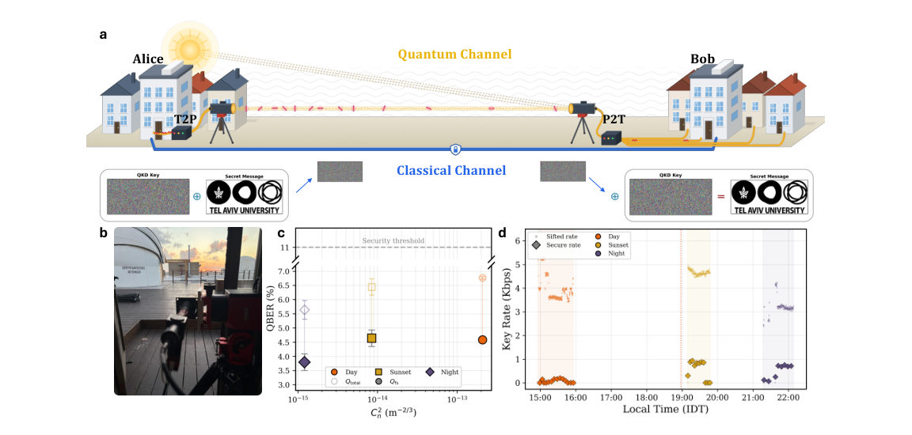
<figcaption class="paper-figure-caption"><b>Fig 1.</b> Figure 1: Hybrid fiber and free-space quantum communication link and exper- imental performance. a Schematic of the hybrid quantum communication architecture. Quantum information is transmitted through a channel comprising optical fiber (time-bin encoding) and free-space propagation (polarization encoding), using T2P and P2T convert- ers between the interfaces. Secure keys generated through the QKD protocol are used for one-time-pad encryption and decryption over an authenticated classical channel. b Photo- graph of the rooftop experimental setup at Tel Aviv University. c Session-averaged free-space (and total) QBER as a function of the estimated atmospheric turbulence strength, quanti-...</figcaption>
</figure>
<figure class="paper-figure-card">
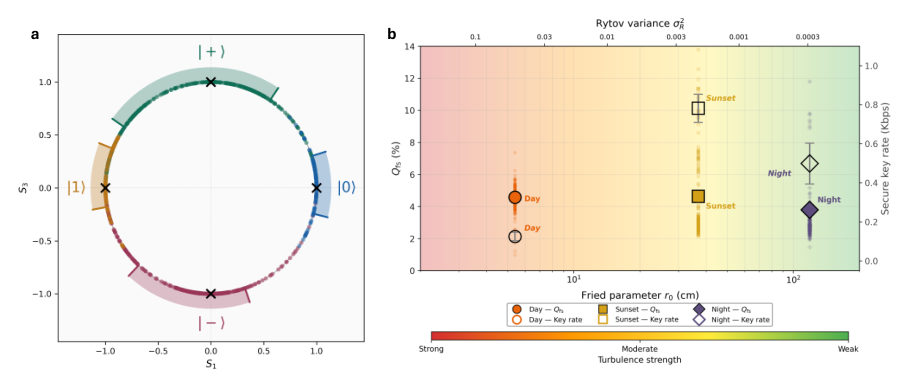
<figcaption class="paper-figure-caption"><b>Fig 2.</b> Figure 2: Turbulence and noise sources. a End-to-end quantum state evaluation for the four different states. The shaded area represents ±1σ around the mean distribution. b Turbulence measurement results. The bottom axis shows the Fried coherence diameter r0 and the top axis shows the corresponding Rytov variance σ2 R. Both are derived from the estimated C2 n. The session-averaged free-space QBER values are shown as filled markers (left axis), while the secure key rate is shown by hollow markers (right axis). Error bars indi- cate ±1σ around the mean value. The background color represents the relative turbulence strength from strong (red) to weak (green), as quantified by the color bar.</figcaption>
</figure>
<figure class="paper-figure-card">
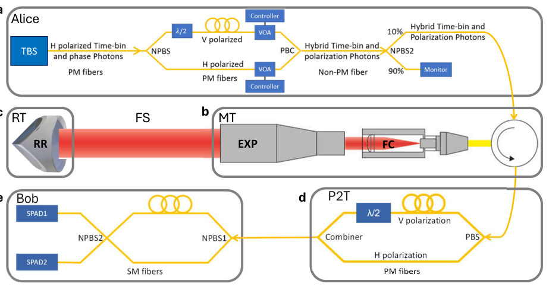
<figcaption class="paper-figure-caption"><b>Fig 3.</b> Figure 3: Hybrid fiber and free-space quantum communication architecture. a Alice with the T2P converter. b The shared free-space main terminal (MT). c The remote terminal retroreflector (RT). d P2T converter. e Bob’s time-bin receiver.</figcaption>
</figure>
<figure class="paper-figure-card">
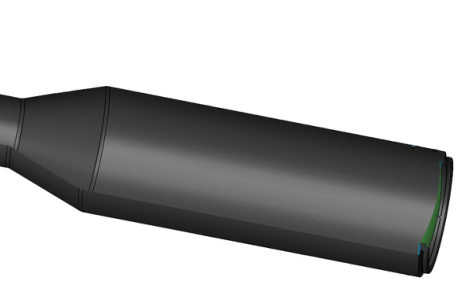
<figcaption class="paper-figure-caption"><b>Fig 4.</b> Figure 4: Schematic diagram for the free-space section.</figcaption>
</figure>
</div>

<p><strong>Summary.</strong> The paper demonstrates a functional, end-to-end Quantum Key Distribution link bridging optical fiber and free-space channels using an all-optical time-bin to polarization encoding converter. By maintaining low error rates across varying atmospheric turbulence conditions, the research establishes a crucial building block for realizing practical quantum networks that span terrestrial and open-air links.</p>
<p><strong>Why it may be interesting.</strong> This work directly addresses a critical engineering bottleneck in quantum networking: interfacing disparate physical media. The all-optical encoding conversion mechanism is highly relevant for building scalable quantum internet infrastructure that must traverse diverse environments.</p>
<details>
<summary>Detailed structure</summary>
<p><strong>Main problem.</strong> The core challenge is establishing end-to-end Quantum Key Distribution (QKD) across hybrid links that combine optical fiber and free-space channels, which inherently use different photonic encodings.</p>
<p><strong>Main result.</strong> The authors successfully demonstrated continuous secure key generation over a 90 m hybrid link under varying atmospheric conditions while maintaining a low QBER below the security threshold. This establishes a practical, all-optical interface for future quantum networks.</p>
<p><strong>Method.</strong> They employed the decoy-state BB84 protocol and developed an end-to-end system incorporating specialized optical converters to perform encoding conversion entirely in the optical domain without measurement.</p>
<p><strong>Model / system.</strong> The physical platform is a hybrid QKD link tested on an urban rooftop, connecting fiber (time-bin encoding) to free space (polarization encoding). The system operates at 1550 nm and was characterized across diurnal cycles and extended distances up to 750 m.</p>
<p><strong>Key observables.</strong> Quantum Bit Error Rate (QBER), secure key rate (peaking around 1.27 kbps in the Sunset session), and atmospheric turbulence metrics ($C_n^2$, $\sigma_R^2$).</p>
<p><strong>Important parameters / regimes.</strong> The system maintained QBER below 7% across conditions spanning more than two orders of magnitude in $C_n^2$. The conversion stages introduce measurable optical losses ($\sim 3 	ext{ dB}$ per stage).</p>
<p><strong>Assumptions / limitations.</strong> The T2P and P2T converters are treated as untrusted components, which preserves the security assumptions of the BB84 protocol. Turbulence models rely on estimating $C_n^2$ from surface-layer measurements.</p>
<p><strong>Figures summary.</strong> Figures illustrate the hybrid architecture (Alice $
ightarrow$ Converter $
ightarrow$ Free Space $
ightarrow$ Converter $
ightarrow$ Bob) and show QBER vs. atmospheric turbulence strength, confirming performance stability below the security threshold.</p>
<p><strong>Paper structure.</strong> The paper details the experimental setup for a hybrid link, characterizes performance across Day/Sunset/Night sessions by monitoring QBER against environmental parameters ($C_n^2$), analyzes the physical limitations imposed by free-space propagation and conversion losses, and finally calculates the secure key rate using established GLLP protocols.</p>
</details>
<details>
<summary>Abstract</summary>
<p>Quantum key distribution (QKD) promises information-theoretically secure communication, but future networks must bridge fiber and free-space links that naturally employ different photonic encodings, namely time-bin in fiber and polarization in free space. Here we demonstrate a complete hybrid fiber and free-space QKD link that bridges both media within a single end-to-end protocol, converting between the two encodings entirely in the optical domain. Using the decoy-state BB84 protocol operating at 1550 nm, we demonstrate continuous secure-key generation over a 90 m outdoor free-space link. The system operates across atmospheric conditions spanning more than two orders of magnitude in the refractive-index structure parameter Cn^2, from strong daytime turbulence to quiescent nighttime conditions, and we further validate photon-level operation over a 750 m free-space extension. Throughout, the link maintains a session-mean quantum bit error rate (QBER) of 5.6-6.8%, well below the 11% BB84 security threshold. The encoding conversion is performed entirely in the optical domain without measurement or state reconstruction, preserving the security assumptions of the BB84 protocol. Consequently, the time-bin-to-polarization (T2P) and polarization-to-time-bin (P2T) converters remain part of the untrusted quantum channel rather than trusted intermediate nodes. These results establish secure photonic encoding conversion as a practical interface between fiber and free-space quantum communication platforms, providing a building block for future quantum networks applications.</p>
</details>
<p><sub><a href="#top">↑ back to top</a></sub></p>

<p><a id="paper-2607.12410"></a></p>
<h3 id="fractionalized-fermi-liquids-with-the-ghost-gutzwiller-ansatz"><a href="http://arxiv.org/abs/2607.12410v1">Fractionalized Fermi liquids with the ghost-Gutzwiller Ansatz</a></h3>
<p><strong>Authors:</strong> Ivan Pasqua, Carlos Mejuto-Zaera, Michele Fabrizio<br>
<strong>Type:</strong> theory · <strong>Category:</strong> strongly correlated electrons · <strong>PDF:</strong> <a href="https://arxiv.org/pdf/2607.12410v1">https://arxiv.org/pdf/2607.12410v1</a><br>
<strong>Analysis basis:</strong> full PDF text, analyzed in chunks
<strong>Topic relevance:</strong> <code>Keldysh / 2PI / non-Gaussian methods</code> <strong>3/5</strong> · <code>analog quantum simulation</code> <strong>1/5</strong> · <code>driven-dissipative phase transition</code> <strong>1/5</strong> · <code>methods for driven-dissipative</code> <strong>1/5</strong></p>
<div class="figure-strip-hint">↔ Scroll figures horizontally</div>
<div class="paper-figures-scroll">
<figure class="paper-figure-card">
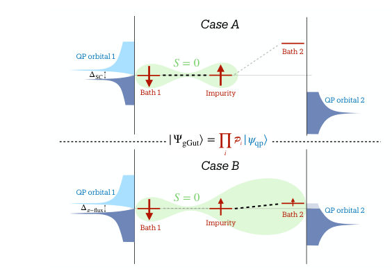
<figcaption class="paper-figure-caption"><b>Fig 1.</b> FIG. 1. Schematic structure of the two-bath ghost-Gutzwiller Ansatz in the two cases considered in the main text. In each panel the central cartoon depicts the impurity model, while the blue lobes on either side are the densities of states of the corresponding auxiliary quasiparticle (QP) bands. Green shading marks a spin singlet (S = 0) and a black (gray) dashed line a non-vanishing (vanishing) hybridization. In case A (6), the impurity hybridizes and forms a singlet with bath 1, which accommodates the doped charge; the associated aux- iliary QP band 1 may develop d-wave quasiparticle pairing ∆SC. Bath 2 stays empty and decoupled. In case B (9), bath 1 remains half-filled and unhybridized,...</figcaption>
</figure>
<figure class="paper-figure-card">
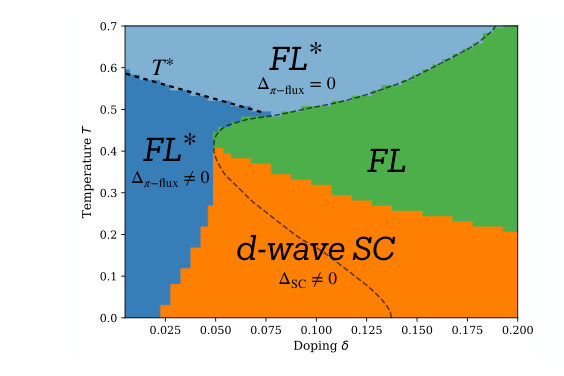
<figcaption class="paper-figure-caption"><b>Fig 2.</b> FIG. 2. Temperature–doping phase diagram of the t-J model (J/t = 0.4, t′/t = −0.4, t = 1) within the ghost-Gutzwiller Ansatz. At low doping the normal state is a fractionalized Fermi liquid (FL∗) with a small, hole-like Fermi surface ac- counting just for the doped holes; the overdoped normal state is a conventional FL with a large, electron-like Fermi surface satisfying Luttinger’s count. The gray dashed line marks the boundary between the two metallic states preventing super- conductivity. Within the FL∗region, the black dashed line is the spinon pairing scale T∗, below which the π-flux order pa- rameter ∆π-flux is finite. When superconductivity is allowed, a d-wave superconducting dome...</figcaption>
</figure>
</div>

<p><strong>Summary.</strong> This paper develops a theoretical framework using the ghost-Gutzwiller Ansatz applied to the t-J model to study exotic metallic states. It successfully predicts the existence of a Fractionalized Fermi Liquid (FL*) phase, which qualitatively reproduces the complex phase diagram observed in underdoped cuprate superconductors. The methodology involves variational optimization and renormalization factor calculations within this advanced correlated electron theory.</p>
<p><strong>Why it may be interesting.</strong> While focused on cuprates, the use of advanced variational techniques like the gGut Ansatz to handle strong correlations and fractionalization is a powerful theoretical tool applicable to other strongly correlated quantum many-body systems.</p>
<details>
<summary>Detailed structure</summary>
<p><strong>Main problem.</strong> The primary goal is understanding the pseudogap normal phase observed in underdoped high-Tc cuprate superconductors, linking it to the theoretical concept of Fractionalized Fermi Liquids (FL*).</p>
<p><strong>Main result.</strong> The authors show that a FL<em> phase emerges in the single-band t-J model using their Ansatz, yielding a phase diagram matching key features: FL</em>, d-wave SC dome, and overdoped FL.</p>
<p><strong>Method.</strong> They employ a variational approach utilizing an extended 'ghost-Gutzwiller' (gGut) Ansatz to calculate upper bounds for the free energy at finite temperature.</p>
<p><strong>Model / system.</strong> The study uses the single-band t-J model, describing doped Mott insulators. The analysis is built around optimizing expectation values using a two-bath parametrization within the gGut framework.</p>
<p><strong>Key observables.</strong> Superconducting order parameter (d-wave $\Delta_{SC}$), $\pi$-flux order parameter ($\Delta_{\pi	ext{-flux}}$), and the identification of three distinct phases: FL*, SC, and conventional FL.</p>
<p><strong>Important parameters / regimes.</strong> Doping ($\delta$), Temperature ($T$), and various renormalization factors derived from the Ansatz optimization.</p>
<p><strong>Assumptions / limitations.</strong> The core approximation is the use of the ghost-Gutzwiller Ansatz, which is assumed to provide a variational upper bound for the free energy. The analysis also assumes an infinite lattice coordination limit in some derivations.</p>
<p><strong>Figures summary.</strong> Figure 2 illustrates the Temperature–doping phase diagram for the t-J model, mapping out the boundaries between the FL*, SC, and FL regimes.</p>
<p><strong>Paper structure.</strong> The paper develops mathematically by first defining the gGut Ansatz (Chunk 1), then applying it variationally to calculate free energy bounds (Chunk 2 &amp; 4), and finally deriving the necessary renormalization factors for physical operators within this framework (Chunk 3).</p>
</details>
<details>
<summary>Abstract</summary>
<p>Fractionalized Fermi liquids ($\mathrm{FL}^{\!*}$), elusive metallic states characterized by fractionalized quasiparticles alongside conventional ones and defying Luttinger's theorem, are prime candidates for the pseudogap regime of underdoped cuprates. We show that a $\mathrm{FL}^{\!*}$ phase emerges in the single-band $t$-$J$ model through a simple ghost-Gutzwiller Ansatz, optimized at the cost of a mean-field calculation. The resulting temperature-doping phase diagram encompasses a low-doping $\mathrm{FL}^{\!*}$, a $d$-wave superconducting dome, and an overdoped conventional Fermi liquid, thereby reproducing key qualitative features of cuprate phenomenology.</p>
</details>
<p><sub><a href="#top">↑ back to top</a></sub></p>

<p><a id="paper-2607.12595"></a></p>
<h3 id="halogen-control-of-magnetic-competition-in-kitaev-candidate-rumath491math-math492math-cl-br"><a href="http://arxiv.org/abs/2607.12595v1">Halogen control of magnetic competition in Kitaev candidate Ru$X_3$ ($X =$ Cl, Br)</a></h3>
<p><strong>Authors:</strong> Ryuta Iwazaki, Shinnosuke Koyama, Takashi Koretsune, Shintaro Hoshino, Joji Nasu<br>
<strong>Type:</strong> theory · <strong>Category:</strong> strongly correlated electrons · <strong>PDF:</strong> <a href="https://arxiv.org/pdf/2607.12595v1">https://arxiv.org/pdf/2607.12595v1</a><br>
<strong>Analysis basis:</strong> full PDF text, analyzed in chunks
<strong>Topic relevance:</strong> <code>analog quantum simulation</code> <strong>3/5</strong> · <code>exotic spin models in light-matter</code> <strong>3/5</strong></p>
<div class="figure-strip-hint">↔ Scroll figures horizontally</div>
<div class="paper-figures-scroll">
<figure class="paper-figure-card">
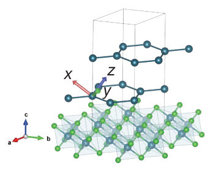
<figcaption class="paper-figure-caption"><b>Fig 1.</b> FIG. 1. Crystal structure of RuX3 with conven- tional hexagonal lattice illustrated by VESTA [42]. Blue spheres represent Ru atoms, and green spheres represent halo- gen atoms. For clarity, halogen sites in the second and third layers are omitted. We also show a local Cartesian coordinate x, y, and z for a RuX6 octahedron.</figcaption>
</figure>
<figure class="paper-figure-card">
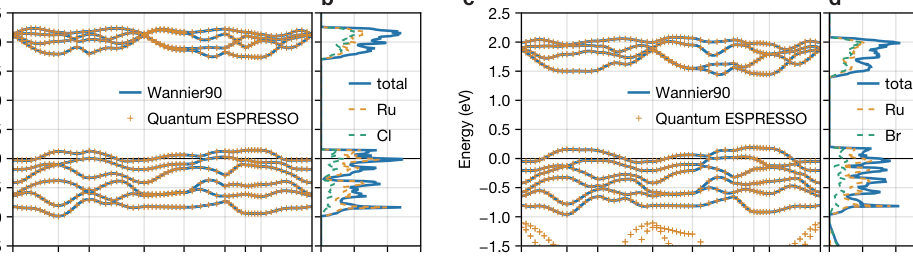
<figcaption class="paper-figure-caption"><b>Fig 2.</b> FIG. 2. Electronic structures of RuCl3 and RuBr3. Energy band structures and densities of states computed by Quantum ESPRESSO and Wannier90 for (a,b) RuCl3 and (c,d) RuBr3. The Fermi energy is set to 0 eV. In panels (a) and (c), yellow crosses denote the DFT results obtained by using Quantum ESPRESSO, and blue solid lines represent the bands fitted using Wannier functions from Wannier90. High-symmetry points along the k-path follow Ref. [43]. In panels (b) and (d), total DOS and projected ones obtained from DFT are presented by solid and dashed lines, respectively.</figcaption>
</figure>
<figure class="paper-figure-card">
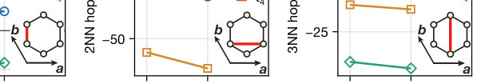
<figcaption class="paper-figure-caption"><b>Fig 3.</b> FIG. 3. Calculated transfer integrals and Coulomb interaction parameters for RuCl3 and RuBr3. The in-plane transfer integrals in RuCl3 and RuBr3 are shown for (a) nearest-neighbor (NN), (b) second-nearest-neighbor (2NN), and (c) third-nearest-neighbor (3NN) bonds within a honeycomb plane. Blue circles, yellow squares, green diamonds, and red triangles correspond to t1 = tyz,yz, t2 = tyz,zx, t3 = txy,xy, t4 = tz2,xy, respectively, for the Z-bond indicated by the solid red line in the inset of each panel. The plotted hopping parameters are spin-independent quantities obtained by averaging the spin-conserving matrix elements, tγγ′ = (t↑↑ γγ′ +t↓↓ γγ′)/2. The local x, y, z coordinates are shown...</figcaption>
</figure>
<figure class="paper-figure-card">
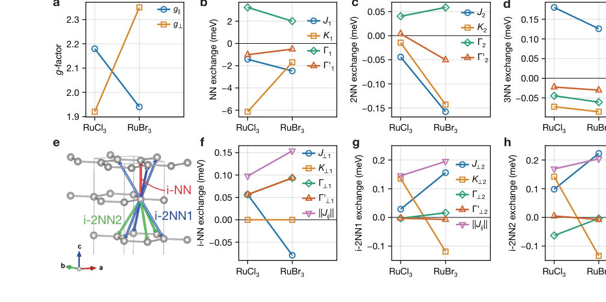
<figcaption class="paper-figure-caption"><b>Fig 4.</b> FIG. 4. Calculated parameters of the effective pseudospin model for RuCl3 and RuBr3. (a) Halogen dependence of the g-factors, where blue circles represent the in-plane components g∥and yellow squares represent the out-of-plane components g⊥. (b)-(d) Coupling constants for in-plane NN, 2NN, and 3NN Z-bonds, respectively. The corresponding bond is indicated in the inset of Figs. 3(a)–(c). Blue circles denote the Heisenberg interaction J, yellow squares denote the Kitaev interaction K, and green diamonds and red triangles denote the two types of anisotropic interactions Γ and Γ′, respectively. (e) Schematic illustration of the interlayer interactions, drawn using VESTA [42]. Red, blue, and...</figcaption>
</figure>
<figure class="paper-figure-card">
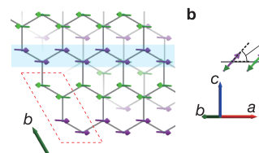
<figcaption class="paper-figure-caption"><b>Fig 5.</b> FIG. 5. Mean-field result for the magnetic structure of the pseudospin model of RuCl3. (a) Top view and (b) side view of the mean-field ground state. The parallelogram with the red dashed line in panel (a) represents the magnetic unit cell assumed in the calculation. To visualize the stacking structure, the magnetic configuration of the upper layer is superimposed in panel (a) with transparency. We also show the elevation angle θ of the magnetic moment measured from the honeycomb plane toward the c axis in panel (b). Blue- shaded region in panel (a) is explained in Fig. 6.</figcaption>
</figure>
</div>

<p><strong>Summary.</strong> This paper theoretically investigates how substituting chlorine with bromine in $  ext{RuX}_3$ controls the magnetic competition necessary for realizing a Kitaev spin liquid. By deriving effective pseudospin models from first-principles calculations, the authors show that halogen substitution tunes the system's magnetic interactions through changes in orbital hybridization and Coulomb anisotropy. This work provides crucial predictive insight into designing quantum magnetic materials.</p>
<p><strong>Why it may be interesting.</strong> The work provides a detailed theoretical mechanism linking crystal chemistry (halogen size/electronegativity) directly to complex quantum magnetic behavior (Kitaev physics), which is highly relevant for designing novel correlated materials.</p>
<details>
<summary>Detailed structure</summary>
<p><strong>Main problem.</strong> The study investigates how substituting halogens (Cl vs. Br) controls magnetic competition within $   ext{RuX}_3$, a candidate material for Kitaev spin liquids.</p>
<p><strong>Main result.</strong> Halogen substitution modifies the magnetic interactions by altering interlayer exchange coupling and introducing orbital-dependent Coulomb anisotropy, thereby controlling the ground state between ferromagnetic and zigzag orders.</p>
<p><strong>Method.</strong> The researchers constructed effective pseudospin models from multiorbital Hubbard models derived via first-principles calculations (DFT) and analyzed these models using mean-field theory.</p>
<p><strong>Model / system.</strong> The physical system is $    ext{RuX}_3$ ($  ext{X} =    ext{Cl},    ext{Br}$), treated as a spin-orbital Mott insulator. The theoretical framework involves mapping the complex Hubbard model onto a simplified pseudospin Hamiltonian to analyze magnetic ground states.</p>
<p><strong>Key observables.</strong> Magnetic ordering (ZZ vs. FM), interlayer exchange interactions, orbital-dependent Coulomb anisotropy, and Wannier orbital spread ($\langle r^2 
angle$).</p>
<p><strong>Important parameters / regimes.</strong> Halogen identity ($X$), deviation parameter $\xi$ (for Coulomb interaction approximation), and coupling constants derived from the effective Hamiltonian.</p>
<p><strong>Assumptions / limitations.</strong> The analysis relies on constructing low-energy effective pseudospin models via perturbation theory in the strong-correlation limit, and subsequent mean-field decoupling of these models.</p>
<p><strong>Figures summary.</strong> Figures show electronic structures (band/DOS) comparing $  ext{RuCl}_3$ and $  ext{RuBr}_3$, g-tensors, and calculated magnetic coupling constants ($J, K, \Gamma$) as a function of the deviation parameter $\xi$.</p>
<p><strong>Paper structure.</strong> The paper proceeds by first establishing the electronic structure differences between $    ext{RuCl}_3$ and $  ext{RuBr}_3$ using DFT. It then develops the mathematical machinery to map this onto an effective pseudospin model, followed by analyzing how varying parameters (like Coulomb anisotropy $\xi$) shifts the predicted magnetic ground state.</p>
</details>
<details>
<summary>Abstract</summary>
<p>The spin-orbital Mott insulators Ru$X_3$ ($X =$ Cl, Br) have attracted considerable attention as promising candidate materials for realizing a Kitaev spin liquid. In this study, we construct effective pseudospin models from multiorbital Hubbard models derived from first-principles calculations and investigate the magnetic states of RuCl$_3$ and RuBr$_3$. From the constructed effective models, we find that RuBr$_3$ has more extended Wannier orbitals and stronger interlayer exchange interactions than RuCl$_3$. These interactions enhance three-dimensional correlations, consistent with the stronger antiferromagnetic tendency experimentally inferred for RuBr$_3$. Orbital-dependent Coulomb anisotropy further reduces the energy difference between ferromagnetic and zigzag states. Our results clarify how halogen substitution controls magnetic competition in Ru$X_3$ through interlayer exchange interactions and effects of orbital-dependent Coulomb interactions.</p>
</details>
<p><sub><a href="#top">↑ back to top</a></sub></p>

<p><a id="paper-2607.12587"></a></p>
<h3 id="lattice-configuration-generation-with-a-self-learning-diffusion-model"><a href="http://arxiv.org/abs/2607.12587v1">Lattice Configuration Generation with a Self-Learning Diffusion Model</a></h3>
<p><strong>Authors:</strong> Akio Tomiya<br>
<strong>Type:</strong> theory · <strong>Category:</strong> numerical methods · <strong>PDF:</strong> <a href="https://arxiv.org/pdf/2607.12587v1">https://arxiv.org/pdf/2607.12587v1</a><br>
<strong>Analysis basis:</strong> full PDF text, analyzed in chunks
<strong>Topic relevance:</strong> <code>methods for driven-dissipative</code> <strong>3/5</strong> · <code>Keldysh / 2PI / non-Gaussian methods</code> <strong>1/5</strong> · <code>analog quantum simulation</code> <strong>1/5</strong> · <code>driven-dissipative phase transition</code> <strong>1/5</strong></p>
<div class="figure-strip-hint">↔ Scroll figures horizontally</div>
<div class="paper-figures-scroll">
<figure class="paper-figure-card">
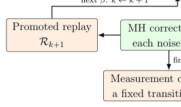
<figcaption class="paper-figure-caption"><b>Fig 1.</b> Figure 1. The two ladders in SLDiffusion. The self-bootstrap beta ladder constructs training data from the exact β = 0 distribution by promoting MH-corrected replay. Here Rk is the training replay at βk defined in Eq. (3.3); only R0 is generated directly from the exact β = 0 distribution. The diffusion-noise ladder is the noise schedule within one SLDiffusion -MAALA proposal. Every noise level is MH-corrected against the same physical target; the ladder is not used as unadjusted transport between intermediate noised distributions. Physics measurements are made on an MH-corrected chain with a fixed transition kernel.</figcaption>
</figure>
<figure class="paper-figure-card">
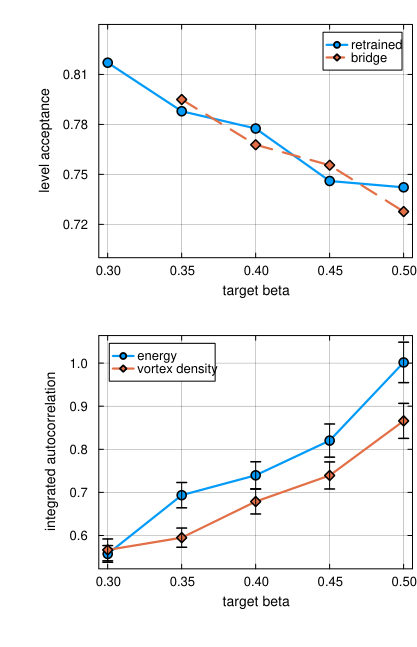
<figcaption class="paper-figure-caption"><b>Fig 2.</b> Figure 2. Acceptance, MSJD, integrated autocorrelation times, and Schwinger–Dyson temperature along the L = 4 self-bootstrap ladder. Solid lines in the upper panels denote networks retrained at each β; dashed lines denote bridges used to construct replay for the next stage. The lower-left panel shows the two observables for the retrained chains. Autocorrelation-time uncertainties are evaluated using Eq. (2.14).</figcaption>
</figure>
<figure class="paper-figure-card">
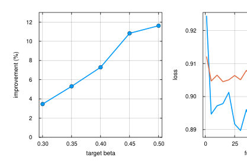
<figcaption class="paper-figure-caption"><b>Fig 3.</b> Figure 3. Score-training diagnostics. Left: maximum improvement of the validation mean squared error (MSE) over noise scales at each β on the L = 4 ladder. Center: loss history at L = 4, β = 0.50. Right: validation MSE improvement at each noise scale for β = 0.5.</figcaption>
</figure>
<figure class="paper-figure-card">
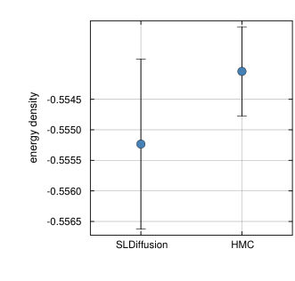
<figcaption class="paper-figure-caption"><b>Fig 4.</b> Figure 4. Comparison of observables at L = 6, β = 0.5. Error bars show 1σ statistical uncertainties. SLDiffusion-MAALA uses 50,000 measurements and the independent HMC calculation uses 500,000. The smaller HMC uncertainties result from an effective sample size approximately 3.7–3.8 times larger.</figcaption>
</figure>
<figure class="paper-figure-card">
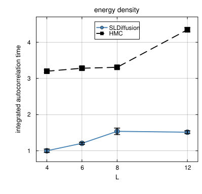
<figcaption class="paper-figure-caption"><b>Fig 5.</b> Figure 5. Volume dependence of the integrated autocorrelation time at β = 0.5. The left and right panels show the energy and vortex densities, respectively, for SLDiffusion-MAALA and HMC at L = 4, 6, 8, 12. One unit on the horizontal trajectory index corresponds to one saved trajectory of each method. A SLDiffusion-MAALA trajectory contains 32 full- lattice updates, whereas an HMC trajectory has length one. Error bars are evaluated using Eq. (2.14).</figcaption>
</figure>
</div>

<p><strong>Summary.</strong> This paper introduces SLDiffusion, a novel self-training diffusion sampler designed to generate accurate lattice field configurations without needing pre-existing Monte Carlo data at the target coupling. By bootstrapping training data from its own Metropolis-Hastings corrected chain, it successfully simulates the 2D XY model and matches established results within small statistical errors.</p>
<p><strong>Why it may be interesting.</strong> While focused on lattice field theory, the core methodology—using ML models (diffusion) corrected by exact physics constraints (MH acceptance)—is a powerful general technique for simulating complex high-dimensional physical systems where sampling is difficult.</p>
<details>
<summary>Detailed structure</summary>
<p><strong>Main problem.</strong> Developing a method for generating lattice field configurations that avoids requiring external training data from initial Monte Carlo calculations when using diffusion models.</p>
<p><strong>Main result.</strong> The self-learning diffusion sampler (SLDiffusion) successfully estimates physical observables in the 2D XY model, matching independent HMC results within $1.35\sigma$ at $eta=0.5$.</p>
<p><strong>Method.</strong> A self-bootstrap mechanism is used where a Markov chain starts from an exactly sampleable distribution ($eta=0$) and iteratively trains its score network using only configurations replayed from the preceding Metropolis-Hastings corrected chain.</p>
<p><strong>Model / system.</strong> The study uses the two-dimensional compact XY model on an $L 	imes L$ lattice with periodic boundary conditions, governed by a cosine interaction Hamiltonian. The goal is to estimate expectation values $\langle O 
angle_{eta,L}$ using the Boltzmann distribution.</p>
<p><strong>Key observables.</strong> Energy density, vortex densities, helicity modulus ($\Upsilon$), and the Schwinger–Dyson temperature ($eta_{SD}$).</p>
<p><strong>Important parameters / regimes.</strong> Coupling constant $\beta$ (tested range: $0.30$ to $0.50$) and lattice size $L$ ($4, 6, 8, 12$).</p>
<p><strong>Assumptions / limitations.</strong> The method assumes that the Metropolis-Hastings correction at every noise level preserves the physical invariant distribution ($\pi_{\beta}$), allowing for self-training.</p>
<p><strong>Figures summary.</strong> Figures illustrate the two coupled ladders: the self-bootstrap beta ladder (for training data generation) and the diffusion-noise ladder (which undergoes MH correction at every step).</p>
<p><strong>Paper structure.</strong> The paper introduces the SLDiffusion framework, details the self-bootstrap process starting from $\beta=0$, presents diagnostics like autocorrelation times and three-way splits to validate chain quality, and concludes by demonstrating convergence to known physical results.</p>
</details>
<details>
<summary>Abstract</summary>
<p>We show that a diffusion sampler for lattice-field configurations can be trained without preparing training data by an external Monte Carlo calculation. Starting from exactly sampled configurations at $β=0$, we construct a self-bootstrap sampler, SLDiffusion, in which periodic Gaussian proposals with a fixed learned score are Metropolis--Hastings corrected, at each $β$, against the same physical target at every noise level, and only replay configurations from the resulting chain are used to train the score at the next stage. In the two-dimensional compact XY model, self-training proceeds from $β=0.30$ to $0.50$ at $L=4$. At $β=0.5$, the energy and vortex densities for $L=4,6,8,12$ agree with independent Hybrid Monte Carlo calculations within $1.35σ$. Volume-native retraining at $L=8$ and $12$ improves both the proposal displacement and autocorrelation. The integrated autocorrelation times of the energy and vortex densities remain below two for all volumes studied. These results demonstrate that a Metropolis-corrected diffusion sampler can be self-trained without configurations drawn in advance from the target coupling.</p>
</details>
<p><sub><a href="#top">↑ back to top</a></sub></p>

<p><a id="paper-2607.12591"></a></p>
<h3 id="quantum-tests-via-inequalities-for-joint-statistics"><a href="http://arxiv.org/abs/2607.12591v1">Quantum tests via inequalities for joint statistics</a></h3>
<p><strong>Authors:</strong> Alfredo Luis<br>
<strong>Type:</strong> theory · <strong>Category:</strong> quantum information and computing · <strong>PDF:</strong> <a href="https://arxiv.org/pdf/2607.12591v1">https://arxiv.org/pdf/2607.12591v1</a><br>
<strong>Analysis basis:</strong> full PDF text, analyzed in chunks
<strong>Topic relevance:</strong> <code>quantum measurements</code> <strong>3/5</strong> · <code>entanglement &amp; information structure</code> <strong>2/5</strong> · <code>measurement-induced transitions</code> <strong>1/5</strong></p>
<div class="figure-strip-hint">↔ Scroll figures horizontally</div>
<div class="paper-figures-scroll">
<figure class="paper-figure-card">
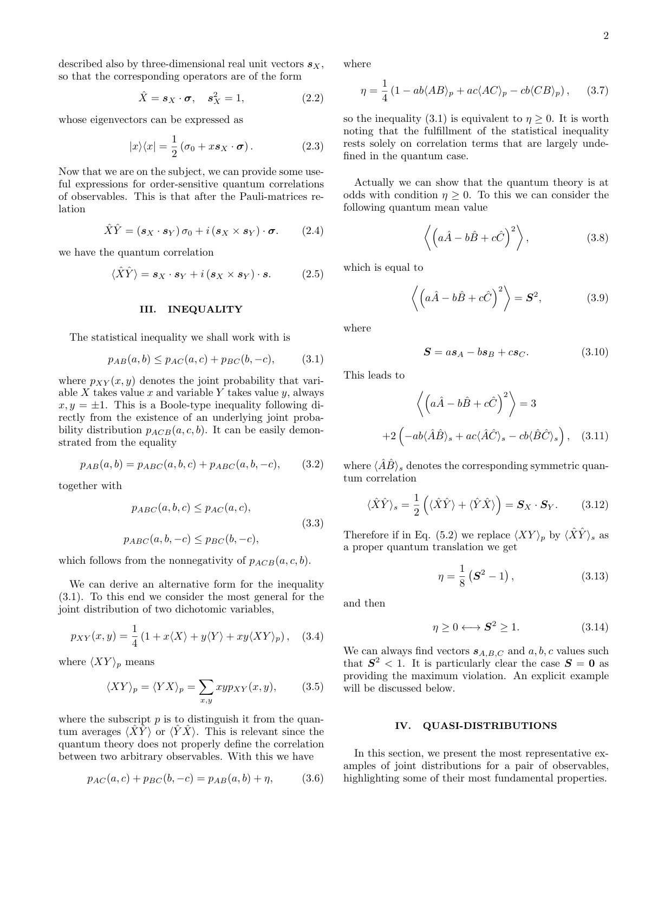
<figcaption class="paper-figure-caption"><b>Fig 1.</b> Low-resolution page preview, page 2</figcaption>
</figure>
<figure class="paper-figure-card">
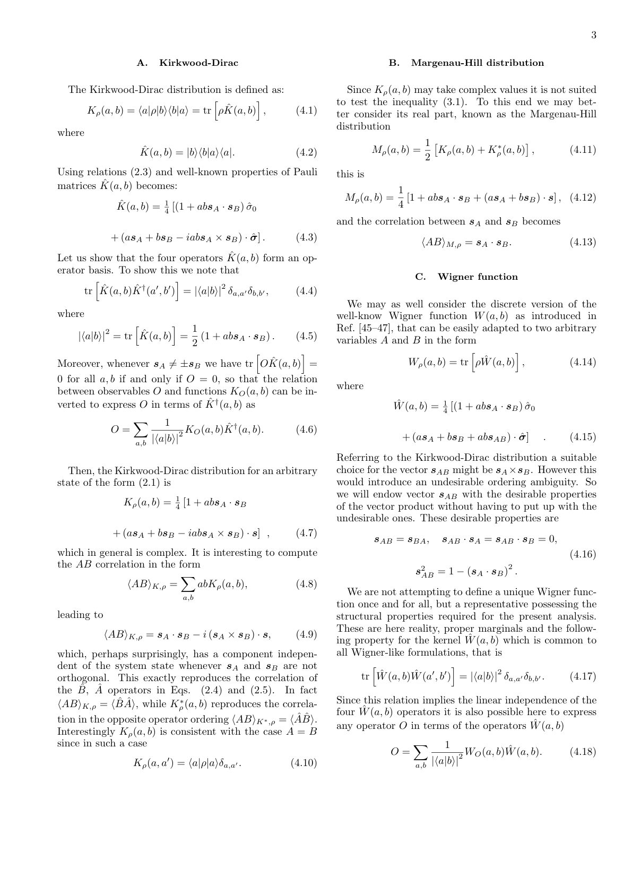
<figcaption class="paper-figure-caption"><b>Fig 2.</b> Low-resolution page preview, page 3</figcaption>
</figure>
<figure class="paper-figure-card">
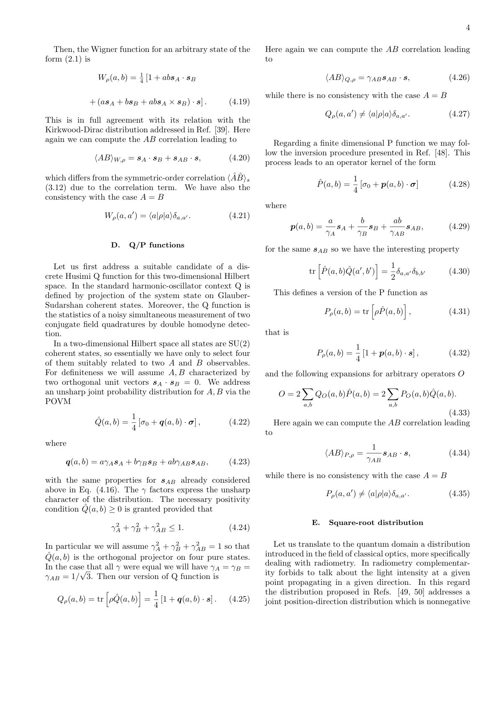
<figcaption class="paper-figure-caption"><b>Fig 3.</b> Low-resolution page preview, page 4</figcaption>
</figure>
<figure class="paper-figure-card">
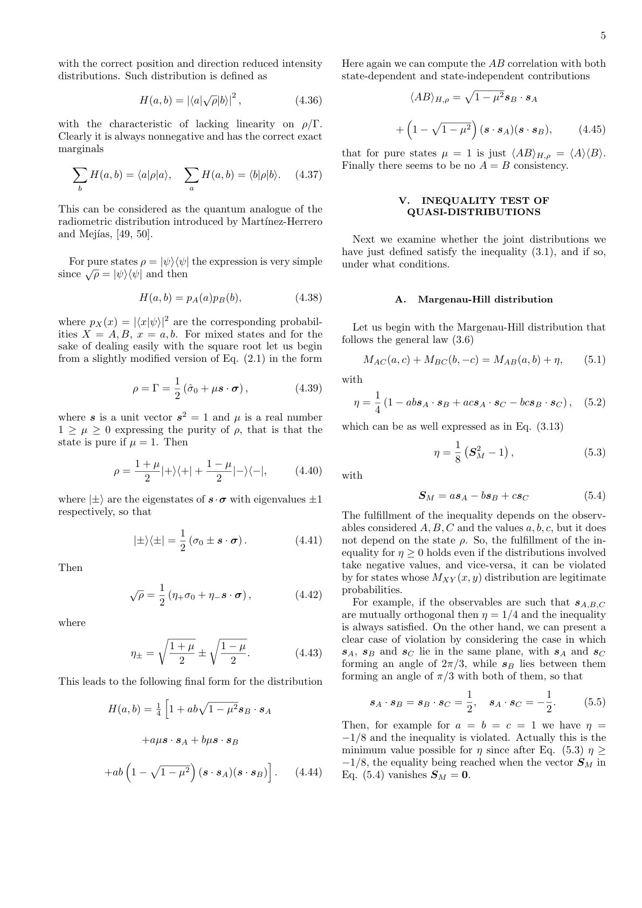
<figcaption class="paper-figure-caption"><b>Fig 4.</b> Low-resolution page preview, page 5</figcaption>
</figure>
<figure class="paper-figure-card">
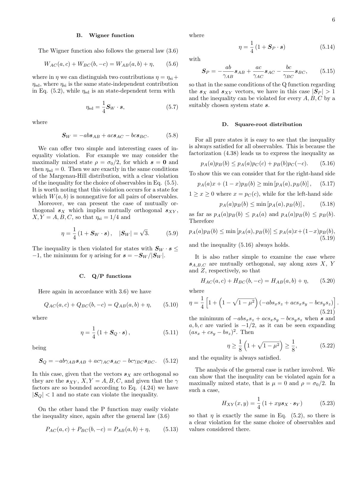
<figcaption class="paper-figure-caption"><b>Fig 5.</b> Low-resolution page preview, page 6</figcaption>
</figure>
</div>

<p><strong>Summary.</strong> This paper develops and tests a family of statistical inequalities designed to detect when data cannot be explained by a standard joint probability distribution. By analyzing violations using various quasi-probability representations (like Wigner and P functions) and modeling noisy measurements, the authors argue that these violations reveal fundamental structural properties of quantum mechanics itself.</p>
<p><strong>Why it may be interesting.</strong> This work delves into the foundational mathematical structure of quantum correlations by establishing necessary conditions (inequalities) that any classical joint probability distribution must satisfy. Violations point to non-classicality rooted in the statistical formalism, which is crucial for understanding fundamental limits in quantum measurements and information processing.</p>
<details>
<summary>Detailed structure</summary>
<p><strong>Main problem.</strong> The work derives statistical inequalities whose violation proves that observed data cannot be described by a genuine joint probability distribution, acting as witnesses to the failure of a common probability space.</p>
<p><strong>Main result.</strong> Violation of these inequalities is found for the maximally mixed state and generally suggests that the non-classicality detected is a property of the quantum statistical structure itself, rather than solely the system state.</p>
<p><strong>Method.</strong> The authors derive specific mathematical inequalities relating joint probabilities (e.g., $p_{AB} \leq p_{AC} + p_{BC}$) and test them using various quasi-probability distributions (Wigner, P, Q) and noisy measurement models.</p>
<p><strong>Model / system.</strong> The analysis focuses on observables acting on a qubit (two-dimensional Hilbert space), characterized by dichotomic measurements ($\pm 1$). The study compares results across different mathematical representations of quantum states and correlations.</p>
<p><strong>Key observables.</strong> Joint probabilities $p_{XY}(x, y)$, the correlation factor $\eta$, and the quantity $S^2$ derived from expectation values of combinations of observables.</p>
<p><strong>Important parameters / regimes.</strong> The state purity parameter ($\mu$), noise factors ($\gamma$), and the structure constants defining the measurement operators ($s_A, s_B, s_C$).</p>
<p><strong>Assumptions / limitations.</strong> Assumptions are made when constructing quasi-probability distributions (like Wigner or P functions) to ensure structural properties like positivity or correct marginals. The analysis also models noisy measurements using noise factors $\gamma$.</p>
<p><strong>Paper structure.</strong> The paper progresses from deriving the fundamental statistical inequality, to testing it against various quasi-distributions (Wigner, P, Q), and finally developing a practical framework for analyzing violations under realistic noisy measurement conditions.</p>
</details>
<details>
<summary>Abstract</summary>
<p>In this work we derive statistical inequalities whose violation is equivalent to the impossibility of describing the data by a genuine joint probability distribution. So they are witnesses of the failure of a common probability space. We examine whether the most significant quantum quasidistributions violate these inequalities. We examine also whether these inequalitites are violated by the joint distributions derived form a noisy joint measurement. As a relevant example we find violations for the maximally mixed state, as well as cases where all system states violate them. This points to the idea that these results are more than a property of the system states, but are instead a property of the statistical structure of quantum mechanics.</p>
</details>
<p><sub><a href="#top">↑ back to top</a></sub></p>

<p><a id="paper-2607.12470"></a></p>
<h3 id="sparse-anisotropic-positive-maps-for-qutrit-entanglement-exact-indecomposability-and-ppt-geometry"><a href="http://arxiv.org/abs/2607.12470v1">Sparse anisotropic positive maps for qutrit entanglement: exact indecomposability and PPT geometry</a></h3>
<p><strong>Authors:</strong> Massimiliano F. Sacchi<br>
<strong>Type:</strong> theory · <strong>Category:</strong> quantum information and computing · <strong>PDF:</strong> <a href="https://arxiv.org/pdf/2607.12470v1">https://arxiv.org/pdf/2607.12470v1</a><br>
<strong>Analysis basis:</strong> full PDF text, analyzed in chunks
<strong>Topic relevance:</strong> <code>entanglement &amp; information structure</code> <strong>3/5</strong> · <code>correlated / nonlocal dissipation</code> <strong>1/5</strong> · <code>driven-dissipative phase transition</code> <strong>1/5</strong> · <code>methods for driven-dissipative</code> <strong>1/5</strong></p>
<div class="figure-strip-hint">↔ Scroll figures horizontally</div>
<div class="paper-figures-scroll">
<figure class="paper-figure-card">
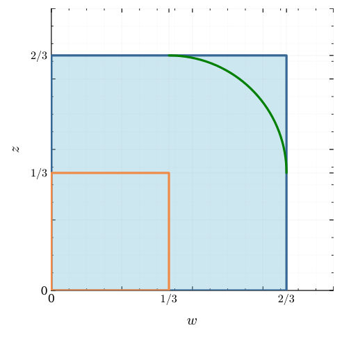
<figcaption class="paper-figure-caption"><b>Fig 1.</b> FIG. 1. Phase diagram of the map Φ(w, z) in the (w, z)-plane. The blue square is the positivity region [0, 2/3] × [0, 2/3] from Proposition 1, and the orange square is the completely positive region [0, 1/3] × [0, 1/3] from Corollary 1. In the upper-right corner, the green quarter circle Eq. (22) separates the decomposable sector from the indecomposable cap proved in Proposition 2.</figcaption>
</figure>
<figure class="paper-figure-card">
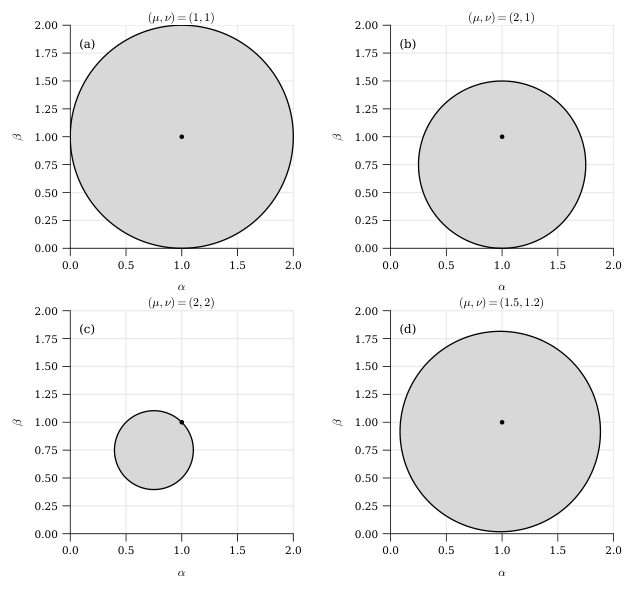
<figcaption class="paper-figure-caption"><b>Fig 2.</b> FIG. 2. Detection region in the (α, β)-plane for the four-parameter family ρα,β,µ,ν for several fixed values of (µ, ν). The shaded region consists of those parameters for which the endpoint witness W∗= W( 2</figcaption>
</figure>
<figure class="paper-figure-card">
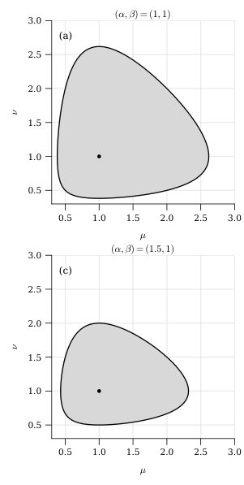
<figcaption class="paper-figure-caption"><b>Fig 3.</b> FIG. 3. Detection region of the endpoint witness W∗= W( 2</figcaption>
</figure>
</div>

<p><strong>Summary.</strong> This paper rigorously analyzes the entanglement detection capabilities of specific positive quantum maps acting on qutrit systems. By mapping out the parameter space defined by weights $w$ and $z$, the authors precisely delineate where the map is positive, completely positive, or decomposable. The result provides a unified theoretical framework linking map structure to advanced concepts like PPT entanglement witnesses and exposed convex geometry.</p>
<p><strong>Why it may be interesting.</strong> This work provides a highly detailed, analytically solvable model for studying fundamental concepts in quantum information theory—specifically how mathematical properties of linear maps (positivity, decomposability) directly correspond to physical phenomena like entanglement detection.</p>
<details>
<summary>Detailed structure</summary>
<p><strong>Main problem.</strong> The primary goal is to develop an analytically tractable framework for detecting quantum entanglement using positive but not completely positive maps, thereby extending beyond the standard Positive Partial Transpose (PPT) criterion.</p>
<p><strong>Main result.</strong> The authors characterized the positivity and decomposability regions of a specific two-parameter family of sparse bistochastic maps on qutrits, identifying explicit PPT entangled states that serve as entanglement witnesses.</p>
<p><strong>Method.</strong> The analysis involves deriving necessary and sufficient conditions for map positivity using scalar tests on probability simplices, characterizing boundaries between different map properties (e.g., decomposability), and constructing specific entangled states to certify indecomposability.</p>
<p><strong>Model / system.</strong> The study is conducted on a qutrit system ($d=3$) using an exactly solvable two-parameter family of sparse bistochastic positive maps, $\Phi(w, z)$, acting on the density matrices of this system.</p>
<p><strong>Key observables.</strong> Positivity/Complete Positivity of the map $\Phi(w, z)$; Decomposability status; Detection capability against specific PPT entangled states ($
ho_{\alpha,eta,\mu,
u}$); The geometry of the PPT cone and its exposed faces.</p>
<p><strong>Important parameters / regimes.</strong> The coherence weights $w$ and $z$, which define the map parameters. Critical thresholds include $1/3$ (for complete positivity) and $2/3$ (related to the full positivity region).</p>
<p><strong>Assumptions / limitations.</strong> The analysis is significantly simplified by specializing to the uniform bistochastic slice ($a=b=d=1/3$) for analytical tractability.</p>
<p><strong>Figures summary.</strong> Not specified in detail, but the notes imply figures illustrate the phase diagram showing the boundaries for positivity, complete positivity, and decomposability as functions of $w$ and $z$.</p>
<p><strong>Paper structure.</strong> The paper systematically analyzes the map $\Phi(w, z)$ by first establishing the conditions for positivity (Lemma 1), then determining the regions where it is completely positive or decomposable (Propositions 1 &amp; 2). It proceeds to certify indecomposability using explicit PPT entangled states and concludes by analyzing the optimality of the resulting entanglement witness $W^*$.</p>
</details>
<details>
<summary>Abstract</summary>
<p>Positive but not completely positive maps provide one of the most direct ways to detect entanglement beyond the positive-partial-transpose (PPT) criterion. We introduce and analyze an exactly solvable two-parameter family of sparse bistochastic positive maps on qutrits, in which two coherence channels are independently tuned by parameters $w$ and $z$. The sparse structure makes the full phase diagram analytic: positivity holds exactly on the square $0\le w,z\le2/3$, complete positivity on the smaller square $0\le w,z\le1/3$, and decomposability is lost precisely outside a quarter circle in the corner $w,z\ge1/3$. The indecomposable region is certified by explicit PPT entangled state adapted to the same witness geometry. At the endpoint $W_*=W(2/3,2/3)$ we construct a four-parameter family of PPT edge states of rank type $(5,5)$, derive their analytic detection region, and show that the corresponding rays are exposed faces of the PPT cone. Finally, although $W_*$ is not optimal, we give an explicit optimal refinement whose detection region on this family is strictly larger. The result is an analytically tractable qutrit setting in which positivity, indecomposability, PPT entanglement, optimality, and exposed convex geometry can be studied in a single framework.</p>
</details>
<p><sub><a href="#top">↑ back to top</a></sub></p>

<p><a id="paper-2607.12274"></a></p>
<h3 id="zero-field-long-range-order-at-math562math-mk-in-the-proximate-quantum-spin-ice-cemath563mathsnmath564mathomath565math-and-phase-diagram-for-magnetic-fields-along-110"><a href="http://arxiv.org/abs/2607.12274v1">Zero-Field Long Range Order at $T \sim 40$ mK in the Proximate Quantum Spin Ice Ce$_2$Sn$_2$O$_7$ and Phase Diagram for Magnetic Fields Along [1,1,0]</a></h3>
<p><strong>Authors:</strong> E. M. Smith, M. S. Powell, R. Schäfer, A. P. Dioguardi, J. W. Kolis, R. Movshovich, B. D. Gaulin<br>
<strong>Type:</strong> both · <strong>Category:</strong> strongly correlated electrons · <strong>PDF:</strong> <a href="https://arxiv.org/pdf/2607.12274v1">https://arxiv.org/pdf/2607.12274v1</a><br>
<strong>Analysis basis:</strong> full PDF text, analyzed in chunks
<strong>Topic relevance:</strong> <code>analog quantum simulation</code> <strong>3/5</strong> · <code>exotic spin models in light-matter</code> <strong>3/5</strong></p>
<div class="figure-strip-hint">↔ Scroll figures horizontally</div>
<div class="paper-figures-scroll">
<figure class="paper-figure-card">
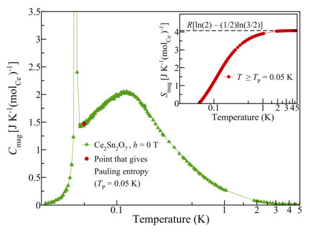
<figcaption class="paper-figure-caption"><b>Fig 1.</b> FIG. 1. The zero-field heat capacity of hydrothermally-grown single crystal Ce2Sn2O7. A large, discontinuous phase tran- sition is obvious at TN ∼0.04 K; This peak is more than three orders of magnitude higher than shown [see Fig. 3(a)]. The red circle just above the anomaly signifies the point above which the measured entropy gives the Pauling entropy R[ln(2) −(1/2) ln(3/2)], indicating a fully developed spin ice state above TN. The inset shows the entropy recovered above the aforementioned “Pauling point”, TP = 0.05 K, in the zero- field heat capacity of Ce2Sn2O7 via Smag = R T TP</figcaption>
</figure>
<figure class="paper-figure-card">
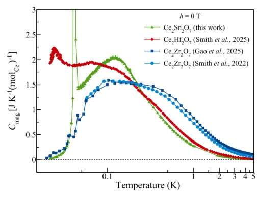
<figcaption class="paper-figure-caption"><b>Fig 2.</b> FIG. 2. The zero-field heat capacity measured from the hydrothermally-grown Ce2Sn2O7 single crystal in this work (green) compared with that measured from floating-zone-grown single crystals of Ce2Hf2O7 in Ref. [33] (red) and Ce2Zr2O7 in Refs. [29, 34] (light blue, dark blue).</figcaption>
</figure>
<figure class="paper-figure-card">
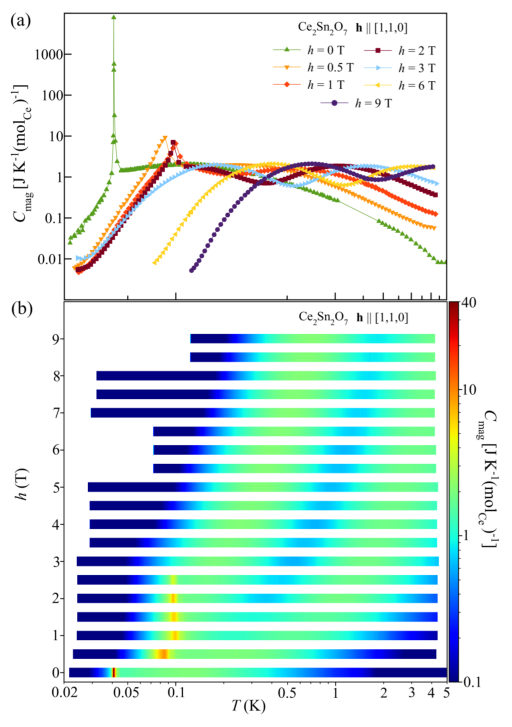
<figcaption class="paper-figure-caption"><b>Fig 3.</b> FIG. 3. (a) The temperature-dependence of the heat capac- ity of Ce2Sn2O7 at various field strengths (as labeled) for a magnetic field h along the [1, 1, 0] direction, shown with logarithmic temperature and heat capacity axes. (b) The mag- netic field versus temperature phase diagram for Ce2Sn2O7 in a magnetic field nominally along the [1, 1, 0] direction, as directly determined from the Cmag measurements in (a). The data at each field strength have been given an artificial width in field-strength for visibility. The dataset shown for 1.5 T (2.5 T, 3.5 T, 4.5 T, 5.5 T, 6.5 T, 7.5 T, 8.5 T) results from averaging the measured data at 1 and 2 T (2 and 3 T, 3 and 4 T, 4 and 5 T, 5 and 6 T, 6...</figcaption>
</figure>
<figure class="paper-figure-card">
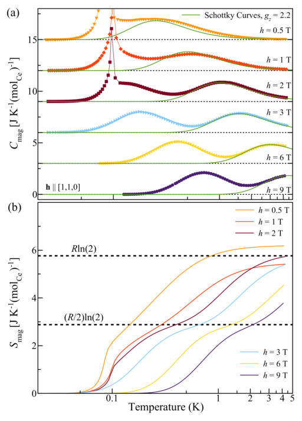
<figcaption class="paper-figure-caption"><b>Fig 4.</b> FIG. 4. (a) The temperature-dependence of the heat capac- ity of Ce2Sn2O7 at various field strengths (as labeled) for a magnetic field along the [1, 1, 0] direction, shown with a logarithmic temperature axis and linear heat capacity axis with the data offset by 3 J K−1mol−1 Ce between each pair of successive field strengths. We compare these measurements to the curves predicted according to the two-level Schottky form Cα = R</figcaption>
</figure>
</div>

<p><strong>Summary.</strong> This study investigates the magnetic ground state of $ ext{Ce}_2   ext{Sn}_2   ext{O}_7$ using ultra-low temperature heat capacity measurements. The results show a distinct first-order transition at $T \sim 0.04$ K, ruling out a Quantum Spin Ice ground state in zero field. Furthermore, applying a magnetic field reveals the underlying physics by splitting excitations into two characteristic chains ($\alpha$ and $eta$), providing a detailed phase diagram.</p>
<p><strong>Why it may be interesting.</strong> The work provides a crucial experimental test case for understanding the transition between highly frustrated quantum spin ice states and conventional magnetically ordered states in pyrochlores, relevant to many-body physics models.</p>
<details>
<summary>Detailed structure</summary>
<p><strong>Main problem.</strong> The study aims to determine the ground state of $ ext{Ce}_2   ext{Sn}_2   ext{O}_7$ and characterize its magnetic ordering transition in zero field and under an applied magnetic field.</p>
<p><strong>Main result.</strong> Zero-field heat capacity measurements reveal a clear first-order transition to long-ranged order at $T \sim 0.04$ K, indicating the material does not possess a Quantum Spin Ice ground state. However, applying a magnetic field along [1,1,0] causes the anomaly to bifurcate into features characteristic of independent $\alpha$ and $eta$ chains.</p>
<p><strong>Method.</strong> The research combines low-temperature heat capacity measurements ($C_{	ext{mag}}$) with theoretical modeling using nearest-neighbor XYZ Hamiltonians and Linked Cluster expansions (NLC).</p>
<p><strong>Model / system.</strong> The system is the pyrochlore magnet $   ext{Ce}_2   ext{Sn}_2   ext{O}_7$, whose magnetic moments are modeled by pseudospin-1/2 degrees of freedom. The interactions are described by an XYZ nearest-neighbor Hamiltonian.</p>
<p><strong>Key observables.</strong> Zero-field heat capacity anomaly ($T_N \sim 0.04$ K), Schottky anomalies under field, and entropy recovery plateaus ($\propto R/2 \ln(2)$).</p>
<p><strong>Important parameters / regimes.</strong> Transition temperature $T_N \sim 0.04$ K; magnetic field direction [1,1,0]; coupling parameters $(J_a, J_b, J_c)$.</p>
<p><strong>Assumptions / limitations.</strong> The analysis assumes the applicability of the XYZ Hamiltonian and models the high-field behavior by decomposing the lattice into $\alpha$ and $eta$ chains.</p>
<p><strong>Figures summary.</strong> Figures illustrate $C_{	ext{mag}}(T)$ vs. field, showing the zero-field transition and its evolution/bifurcation under a [1,1,0] field; phase diagrams map this field dependence; residual plots ($\delta^2$) confirm model agreement.</p>
<p><strong>Paper structure.</strong> The paper progresses from initial zero-field measurements establishing magnetic ordering ($T \sim 0.04$ K), to analyzing the effect of an external magnetic field along [1,1,0] which reveals chain decomposition and Schottky anomalies, concluding with detailed theoretical fitting using NLC methods.</p>
</details>
<details>
<summary>Abstract</summary>
<p>The Ce$^{3+}$ pseudospin-1/2 degrees of freedom in the pyrochlore magnets Ce$_2$X$_2$O$_7$, with $X$ = Zr, Hf, or Sn, possess dipole-octupole character. The XYZ nearest-neighbor model Hamiltonians which have successfully described their properties make them attractive candidates for quantum spin ice ground states. We report new heat capacity measurements to very low temperatures on a high-quality single crystal of Ce$_2$Sn$_2$O$_7$ grown by hydrothermal techniques. Our zero-field measurements uncover a clear first order transition to long-ranged order at $T \sim 0.04$ K, well below the downturn in the broader Schottky-like anomaly that is a common feature in the zero-field heat capacity for cerium pyrochlores. This observation settles the debate as to whether Ce$_2$Sn$_2$O$_7$ possesses a QSI ground state in zero field - it does not. However, we also find compelling evidence suggesting that spin ice physics is nearby, and remains relevant to Ce$_2$Sn$_2$O$_7$. Application of a magnetic field along the $[1,1,0]$ direction leads to an evolution of this peak to a weak anomaly at higher temperature more characteristic of a continuous, mean field transition. At higher fields along $[1,1,0]$, the Schottky-like anomaly bifurcates similar to expectations for independent polarized $α$ and orthogonal $β$ chains in classical spin ice. These new experimental results demonstrate richness to the phase diagram for Ce-based pyrochlores.</p>
</details>
<p><sub><a href="#top">↑ back to top</a></sub></p>

<p><a id="paper-2607.12432"></a></p>
<h3 id="deterministic-minimum-leakage-continuous-variable-quantum-key-distribution-with-phase-conjugated-twin-beams"><a href="http://arxiv.org/abs/2607.12432v1">Deterministic Minimum-Leakage Continuous-Variable Quantum Key Distribution with Phase-Conjugated Twin Beams</a></h3>
<p><strong>Authors:</strong> Zhenlin Zhao, Dawei Wang<br>
<strong>Type:</strong> theory · <strong>Category:</strong> quantum information and computing · <strong>PDF:</strong> <a href="https://arxiv.org/pdf/2607.12432v1">https://arxiv.org/pdf/2607.12432v1</a><br>
<strong>Analysis basis:</strong> full PDF text, analyzed in chunks
<strong>Topic relevance:</strong> <code>quantum optics experiment</code> <strong>3/5</strong> · <code>interference shaping light</code> <strong>1/5</strong> · <code>quantum measurements</code> <strong>1/5</strong></p>
<div class="figure-strip-hint">↔ Scroll figures horizontally</div>
<div class="paper-figures-scroll">
<figure class="paper-figure-card">
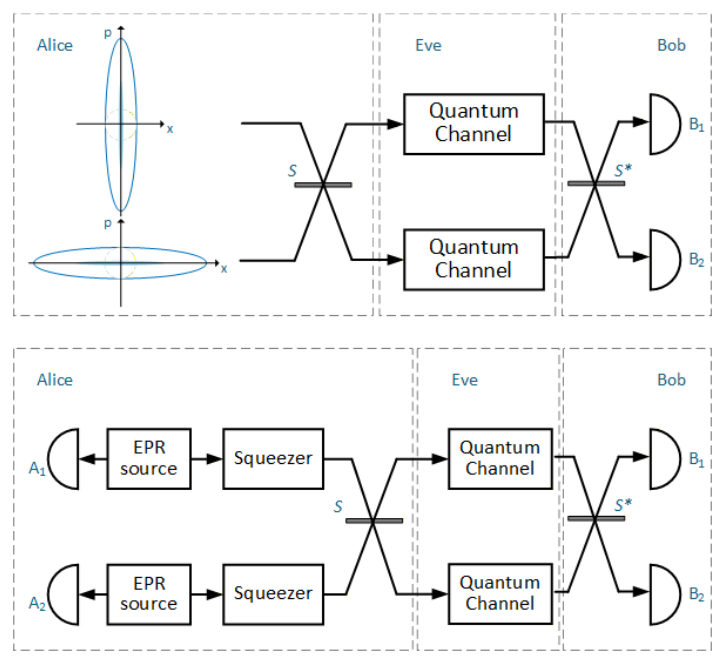
<figcaption class="paper-figure-caption"><b>Fig 1.</b> FIG. 1. The two-mode entanglement-based CV-QKD protocol under Gaussian two-mode attacks.</figcaption>
</figure>
<figure class="paper-figure-card">
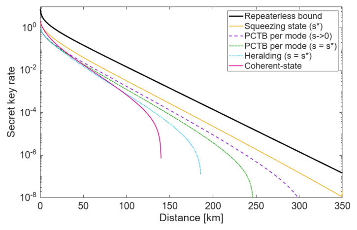
<figcaption class="paper-figure-caption"><b>Fig 2.</b> FIG. 2. Secret key rate per mode versus transmission distance for the two-mode minimum-leakage</figcaption>
</figure>
<figure class="paper-figure-card">
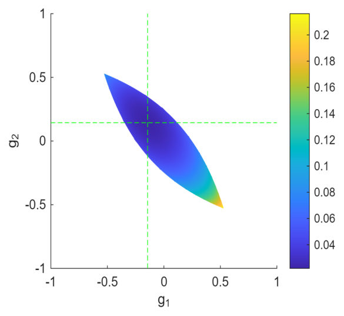
<figcaption class="paper-figure-caption"><b>Fig 3.</b> FIG. 3. Secret key rate as a function of Eve’s ancillary correlations g1 and g2. The physically</figcaption>
</figure>
<figure class="paper-figure-card">

<figcaption class="paper-figure-caption"><b>Fig 4.</b> Figure 3 shows the secret key rate obtained by scanning the physically allowed values of</figcaption>
</figure>
<figure class="paper-figure-card">
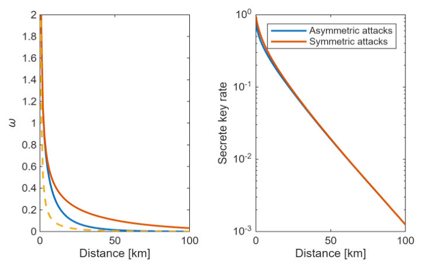
<figcaption class="paper-figure-caption"><b>Fig 5.</b> FIG. 4. Optimized correlated two-mode attacks with g1 = −g2. (a) The optimal ancillary corre-</figcaption>
</figure>
</div>

<p><strong>Summary.</strong> This paper introduces a deterministic method for minimum-leakage Continuous-Variable Quantum Key Distribution using phase-conjugated twin beams. It rigorously compares this new protocol against existing heralding methods, demonstrating that the PCTB approach is more resource-efficient by requiring less squeezing for finite key rates. This advances practical quantum communication security by offering a simpler, non-heralding implementation.</p>
<p><strong>Why it may be interesting.</strong> It provides a concrete, experimentally appealing alternative to established CV-QKD protocols, offering improved resource efficiency (less squeezing) while maintaining security guarantees against advanced eavesdropping attacks.</p>
<details>
<summary>Detailed structure</summary>
<p><strong>Main problem.</strong> Developing a deterministic minimum-leakage Continuous-Variable Quantum Key Distribution (CV-QKD) protocol that eliminates the need for an Alice-side heralding measurement.</p>
<p><strong>Main result.</strong> The proposed phase-conjugated twin-beam protocol achieves the same secret key rate as existing heralding protocols in the large-squeezing limit, but requires approximately 3 dB less squeezing for finite squeezing.</p>
<p><strong>Method.</strong> Comparison of two decomposition methods (Prepare-and-Measure vs. Heralding) applied to Gaussian states and analysis of security against correlated two-mode attacks.</p>
<p><strong>Model / system.</strong> The system uses Continuous-Variable Quantum Key Distribution based on squeezed Gaussian ensembles, specifically employing phase-conjugated twin beams (PCTB).</p>
<p><strong>Key observables.</strong> Secret Key Rate (SKR), minimum-leakage condition, and the required squeezing resource.</p>
<p><strong>Important parameters / regimes.</strong> Squeezing parameter ($r$), anti-squeezed variance ($Q$), and correlation parameters for Eve's attack ($g_1, g_2$).</p>
<p><strong>Assumptions / limitations.</strong> Assumes ideal detection, a reconciliation efficiency of 0.95, and analyzes the security against optimized correlated two-mode Gaussian attacks.</p>
<p><strong>Figures summary.</strong> Figures illustrate SKR vs. distance for different protocols, show the dependence of SKR on Eve's ancillary correlations ($g_1, g_2$), and compare optimal attack correlations to separability boundaries.</p>
<p><strong>Paper structure.</strong> The paper compares the deterministic PCTB protocol against existing heralding protocols by analyzing their respective decomposition methods (PM vs. EB) and quantifying resource requirements using covariance matrices and key rate calculations.</p>
</details>
<details>
<summary>Abstract</summary>
<p>Minimum-leakage continuous-variable quantum key distribution suppresses Eve's Holevo information by engineering the signal ensemble at the state-preparation stage. Existing symmetric minimum-leakage protocols achieve this goal by heralding: Alice interferes two squeezed ensembles, measures one output mode, and sends the other to Bob. Here we propose a deterministic two-mode protocol that removes the Alice-side heralding step. Alice combines two oppositely squeezed Gaussian ensembles on a balanced beam splitter and transmits both output modes, which form phase-conjugated twin beams. We show that this protocol is related to the heralding protocol through a common entanglement-based source but corresponds to a different prepare-and-measure decomposition. In the very-large-squeezing limit, the two protocols give the same secret key rate per transmitted optical mode. For finite squeezing, however, the phase-conjugated twin-beam protocol requires approximately 3 dB less squeezing to achieve the same key rate. We further analyze correlated two-mode Gaussian attacks in which Eve injects ancillary modes with optimized inter-mode correlations. We find that the correlated attacks are slightly more efficient than independent attacks, but the advantage remains limited under the minimum-leakage condition. These results show that phase-conjugated twin beams provide a deterministic and experimentally appealing route to symmetric minimum-leakage CV-QKD.</p>
</details>
<p><sub><a href="#top">↑ back to top</a></sub></p>

<p><a id="paper-2607.12444"></a></p>
<h3 id="q2nsviz-an-open-source-standalone-visualizer-for-quantum-network-simulations"><a href="http://arxiv.org/abs/2607.12444v1">Q2NSViz: An Open-source Standalone Visualizer for Quantum Network Simulations</a></h3>
<p><strong>Authors:</strong> Francesco Mazza, Marcello Caleffi, Angela Sara Cacciapuoti<br>
<strong>Type:</strong> theory · <strong>Category:</strong> quantum information and computing · <strong>PDF:</strong> <a href="https://arxiv.org/pdf/2607.12444v1">https://arxiv.org/pdf/2607.12444v1</a><br>
<strong>Analysis basis:</strong> full PDF text, analyzed in chunks
<strong>Topic relevance:</strong> <code>entanglement &amp; information structure</code> <strong>3/5</strong> · <code>methods for driven-dissipative</code> <strong>1/5</strong> · <code>non-equilibrium dynamics</code> <strong>1/5</strong></p>
<div class="figure-strip-hint">↔ Scroll figures horizontally</div>
<div class="paper-figures-scroll">
<figure class="paper-figure-card">
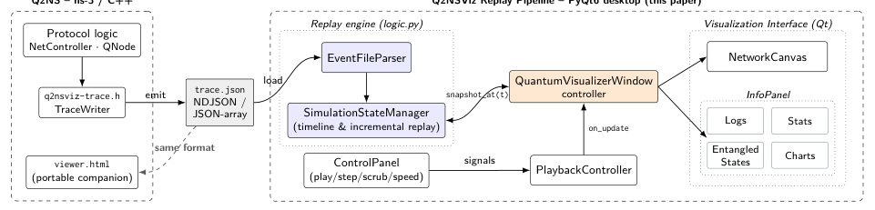
<figcaption class="paper-figure-caption"><b>Fig 1.</b> Figure 1: Q2NSViz replay workflow. The simulator and viewer are decoupled through a typed NDJSON/JSON-array trace that feeds both the desktop application and the portable browser companion shipped with Q2NS [3]. The parser and state-management routines (logic.py) are Qt-free, exposing a programmatic API independent of the GUI.</figcaption>
</figure>
<figure class="paper-figure-card">
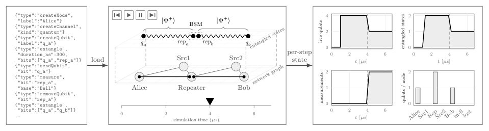
<figcaption class="paper-figure-caption"><b>Fig 2.</b> Figure 2: Q2NSViz at a glance: a simulator trace is ingested and replayed (1), driving (logical) views of the physical network topology and the entanglement-induced connectivity graph – capturing links that transcend physical proximity – alongside a navigation timeline. Panel (3) plots live quantities over time: active qubits, entangled states, and measurements. At 𝑡≈4 𝜇s an entanglement swap is in progress: the repeater still holds the two memory qubits of the Bell pairs |Φ+⟩, both under measurement.</figcaption>
</figure>
</div>

<p><strong>Summary.</strong> This paper introduces Q2NSViz, an open-source Python tool designed to visualize and replay complex simulations of quantum networks. By reading standardized JSON/NDJSON trace files, it reconstructs the time evolution, making dynamic elements like entanglement structure visible alongside physical connectivity. This provides researchers with a zero-coding way to inspect protocol execution details.</p>
<p><strong>Why it may be interesting.</strong> It provides a crucial visualization layer for understanding the dynamics of entanglement manipulation in large-scale quantum systems, which is central to quantum networking research.</p>
<details>
<summary>Detailed structure</summary>
<p><strong>Main problem.</strong> The unique, non-classical features of quantum networks make their simulation and intuitive understanding inherently difficult due to stateful entanglement resources.</p>
<p><strong>Main result.</strong> Q2NSViz is presented as an open-source tool that visualizes the time evolution of quantum network simulations by replaying structured trace files.</p>
<p><strong>Method.</strong> The tool ingests simulation traces via a decoupled JSON/NDJSON contract and uses a PyQt6 interface to reconstruct and display physical topology, entanglement structure, and classical events over time.</p>
<p><strong>Model / system.</strong> The system modeled is a quantum network involving physical topologies, stored/in-flight qubits, classical bits, and dynamic entanglement relationships undergoing protocol execution (e.g., entanglement swapping).</p>
<p><strong>Key observables.</strong> Physical topology, evolving entanglement structure (shown on an entanglement graph), classical communication events, and live quantities like the number of entangled states.</p>
<p><strong>Important parameters / regimes.</strong> Time evolution ($   ext{t}[\mu  ext{s}]$) is a key parameter for tracking dynamic changes during protocol execution.</p>
<p><strong>Assumptions / limitations.</strong> The tool assumes that any quantum network simulator adhering to the defined JSON/NDJSON trace contract can be analyzed, making it independent of specific simulator internals.</p>
<p><strong>Figures summary.</strong> Figure 1 illustrates the architecture flow from the JSON/NDJSON trace format through the Replay Engine to the PyQt6 interface. Figure 2 shows a replay example demonstrating views of topology, entanglement graph, and live quantity plots driven by an ingested trace.</p>
<p><strong>Paper structure.</strong> The paper introduces Q2NSViz as a solution to visualizing complex quantum network traces. It details its architecture (trace contract $
ightarrow$ engine $
ightarrow$ interface) and demonstrates its capability using examples like entanglement swapping, showing how it visualizes dynamic entanglement structure.</p>
</details>
<details>
<summary>Abstract</summary>
<p>The unique and non-classical features of quantum networks make their simulation and intuitive understanding inherently difficult. In this work, we present Q2NSViz, an open-source Python-based visualization tool for replaying and inspecting quantum-network simulation traces. Q2NSViz reconstructs the time evolution of the simulated network state, including physical topology, stored and in-flight qubits, classical bits and packets, measurements, and entanglement relationships. In this way, it exposes not only physical connectivity, but also the dynamic entanglement-induced structure produced, consumed, and transformed by protocol execution. Q2NSViz is built around a decoupled JSON/NDJSON trace contract, a Qt-free replay engine, and an interactive PyQt6 interface, making it a standalone companion to Q2NS and reusable by other simulation backends that emit the same trace format. By turning execution traces into navigable and reproducible visual artifacts, Q2NSViz provides a zero-coding tool for researchers and educators, narrowing the gap between abstract protocol logic and concrete execution.</p>
</details>
<p><sub><a href="#top">↑ back to top</a></sub></p>

<p><a id="paper-2607.12983"></a></p>
<h3 id="the-log-log-jam-in-gaussian-state-tomography"><a href="http://arxiv.org/abs/2607.12983v1">The log log jam in Gaussian state tomography</a></h3>
<p><strong>Authors:</strong> Sitan Chen, Weiyuan Gong, Qi Ye, Zhihan Zhang<br>
<strong>Type:</strong> theory · <strong>Category:</strong> quantum information and computing · <strong>PDF:</strong> <a href="https://arxiv.org/pdf/2607.12983v1">https://arxiv.org/pdf/2607.12983v1</a><br>
<strong>Analysis basis:</strong> full PDF text, analyzed in chunks
<strong>Topic relevance:</strong> <code>quantum measurements</code> <strong>3/5</strong> · <code>entanglement &amp; information structure</code> <strong>1/5</strong> · <code>measurement-induced transitions</code> <strong>1/5</strong></p>
<div class="figure-strip-hint">↔ Scroll figures horizontally</div>
<div class="paper-figures-scroll">
<figure class="paper-figure-card">
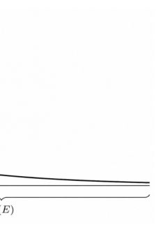
<figcaption class="paper-figure-caption"><b>Fig 1.</b> Figure 1: Exponential decay of Fock coefficients for |ψz⟩over a window of length Θ(E)</figcaption>
</figure>
<figure class="paper-figure-card">
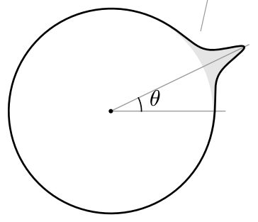
<figcaption class="paper-figure-caption"><b>Fig 2.</b> Figure 2: Distribution pr,θ over measurement outcomes (gray) under the even canonical phase POVM con- centrates around true angle θ when measuring |ψz⟩for z = tanh(r)e2iθ</figcaption>
</figure>
</div>

<p><strong>Summary.</strong> This paper rigorously determines the sample complexity needed to reconstruct continuous-variable Gaussian quantum states. It proves that restricting measurements to standard Gaussian types introduces a fundamental dependence on system energy ($E$), but this limitation can be overcome by utilizing highly entangled or non-Gaussian measurement strategies, leading to energy-independent estimation rates.</p>
<p><strong>Why it may be interesting.</strong> This work directly addresses the resource scaling in quantum estimation theory for bosonic systems, providing concrete benchmarks against which new measurement protocols or physical implementations (like those using squeezing/homodyne detection) must be compared.</p>
<details>
<summary>Detailed structure</summary>
<p><strong>Main problem.</strong> The paper investigates the sample complexity required for quantum state tomography of continuous-variable Gaussian states, particularly analyzing how measurement type (Gaussian vs. non-Gaussian) and adaptivity affect this complexity.</p>
<p><strong>Main result.</strong> It establishes that using only Gaussian measurements introduces a fundamental $\log \log E$ energy dependence, but this can be circumvented by employing highly entangled or non-Gaussian measurements to achieve energy-independent scaling.</p>
<p><strong>Method.</strong> The analysis involves deriving lower and upper bounds for sample complexity using Fisher information arguments and constructing matching protocols based on canonical phase POVMs and generalized measurement schemes.</p>
<p><strong>Model / system.</strong> The focus is on continuous-variable quantum systems, specifically pure Gaussian states characterized by their mean energy $E$ and number of modes $n$. The underlying mathematical framework involves symplectic geometry ($    ext{Sp}(2n)$) for characterizing the state space $  ext{D}_n$.</p>
<p><strong>Key observables.</strong> Sample complexity (number of measurements), trace distance $\epsilon$, system energy $E$, and mode number $n$.</p>
<p><strong>Important parameters / regimes.</strong> The degree of adaptivity ($T$) is a crucial parameter governing the trade-off between measurement rounds and energy dependence.</p>
<p><strong>Assumptions / limitations.</strong> The analysis assumes the ability to perform specific measurements, such as single-copy canonical phase POVMs or highly entangled non-Gaussian measurements, which are key to achieving optimal bounds.</p>
<p><strong>Paper structure.</strong> The paper progresses by first establishing the fundamental energy dependence for Gaussian measurements (Theorem 1.1), then deriving a smooth tradeoff between adaptivity and energy using lower/upper bounds (Theorems 1.2 &amp; 1.3). Finally, it contrasts these results by showing that non-Gaussian measurements can achieve energy independence.</p>
</details>
<details>
<summary>Abstract</summary>
<p>Unlike in finite dimensions, quantum information in continuous-variable systems has the peculiar feature that without imposing physical constraints, the sample complexity of state tomography can be unbounded. Remarkably, this is even the case for state-of-the-art protocols for learning Gaussian states, which have finite-dimensional descriptions: the best known rates scale with $\log \log E$, where $E$ is the energy of the system. We prove this is not an artifact of existing analyses, but a fundamental limitation of the measurements used. We show: (1) Any protocol that uses Gaussian measurements, even entangled or adaptively chosen ones, must incur a $\log \log E$ dependence. This answers an open question posed by a number of previous works. (2) There is a smooth tradeoff between the number of rounds of adaptivity and the energy dependence, and we give a matching protocol achieving this interpolated rate. (3) With highly entangled, non-Gaussian measurements, one can learn $n$-mode pure Gaussian states with $O(n^2 / ε^2)$ samples, independent of $E$. This answers an open question posed by Chen et al. (4) A simple protocol based on the single-copy canonical phase POVM of Holevo and Helstrom learns single-mode pure Gaussian states with $O(1/ε^2)$ samples, again independent of $E$.   Our results clarify the role of energy in bosonic state tomography and shed new light on the intriguing interplay between adaptivity, entanglement, and magic in quantum learning.</p>
</details>
<p><sub><a href="#top">↑ back to top</a></sub></p>

<p><a id="paper-2607.12651"></a></p>
<h3 id="james-stein-estimation-for-quantum-sensing-schemes"><a href="http://arxiv.org/abs/2607.12651v1">James-Stein estimation for quantum sensing schemes</a></h3>
<p><strong>Authors:</strong> Luke Alexander Rhodes, Sean William Moore, Jacob A. Dunningham<br>
<strong>Type:</strong> theory · <strong>Category:</strong> quantum information and computing · <strong>PDF:</strong> <a href="https://arxiv.org/pdf/2607.12651v1">https://arxiv.org/pdf/2607.12651v1</a><br>
<strong>Analysis basis:</strong> full PDF text, analyzed in chunks
<strong>Topic relevance:</strong> <code>quantum measurements</code> <strong>3/5</strong></p>
<div class="figure-strip-hint">↔ Scroll figures horizontally</div>
<div class="paper-figures-scroll">
<figure class="paper-figure-card">
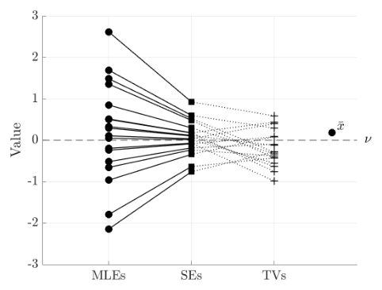
<figcaption class="paper-figure-caption"><b>Fig 1.</b> FIG. 1. The idea behind shrinkage estimators (SEs). The initial MLEs are scaled towards some central point ν (or if this is not known, towards the mean of the MLEs, ¯x) in an attempt to ‘shrink’ some, or all, of the components closer to the underlying true values. Note that it is possible for some of the individual components to be moved further away.</figcaption>
</figure>
<figure class="paper-figure-card">
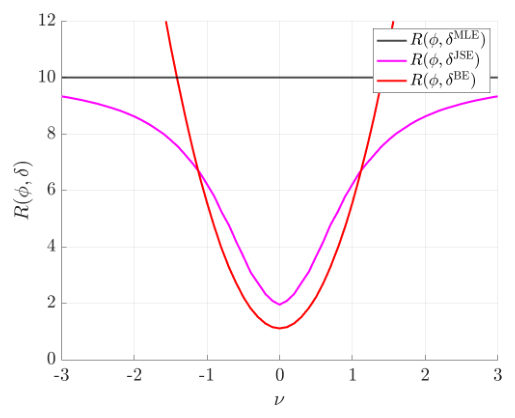
<figcaption class="paper-figure-caption"><b>Fig 2.</b> FIG. 2. MSE as a function of ν for the MLE, JSE and Bayes estimator with ∥ϕ∥2 = 0, d = 10, σ = 1 and τ = 1/ √</figcaption>
</figure>
<figure class="paper-figure-card">
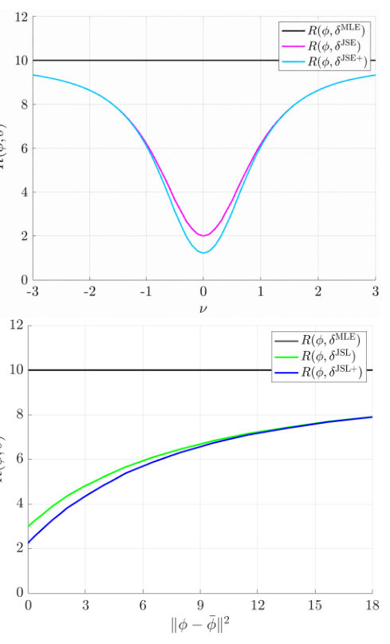
<figcaption class="paper-figure-caption"><b>Fig 3.</b> FIG. 3. The positive-part versions dominate the standard estimators. The upper plot compares the risk of JSE+, given by (15) to the risk of the standard JSE given by (5). The lower plot compares the risk of JSL and JSL+, given by (12) and (18) respectively. For both parts we have taken σ = 1.</figcaption>
</figure>
<figure class="paper-figure-card">
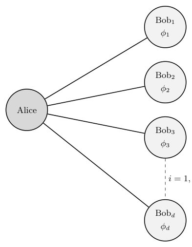
<figcaption class="paper-figure-caption"><b>Fig 4.</b> FIG. 4. A simple networked metrology scheme with a central node, Alice, and d distributed Bobs, where d ≥3. Each Bobi encodes an unknown phase ϕi locally via a unitary transformation.</figcaption>
</figure>
<figure class="paper-figure-card">
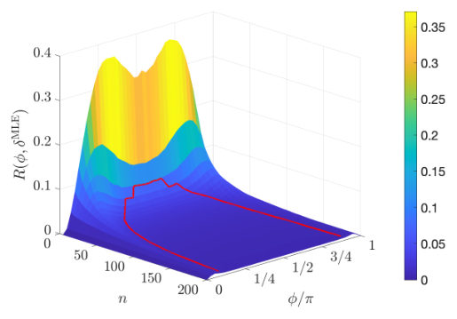
<figcaption class="paper-figure-caption"><b>Fig 5.</b> FIG. 5. MSE for the MLE of a single phase (d = 1) as a function of the true value, ϕ, and the number of measurements, n. The red line encloses the region of approximate normality.</figcaption>
</figure>
</div>

<p><strong>Summary.</strong> This paper develops and applies the James-Stein estimator to address limitations in the data analysis stage of quantum metrology. By employing this shrinkage technique, it demonstrates a statistically significant reduction in estimation error compared to standard Maximum Likelihood Estimation, even for highly sensitive entangled quantum measurements.</p>
<p><strong>Why it may be interesting.</strong> This is highly relevant as it provides a statistically rigorous tool (JSE) to improve data processing in quantum sensing. It shows how advanced statistical inference can enhance the achievable precision beyond what standard frequentist methods predict, especially when dealing with complex measurement statistics.</p>
<details>
<summary>Detailed structure</summary>
<p><strong>Main problem.</strong> The primary challenge addressed is improving parameter estimation precision in quantum metrology, especially when limited data are available for estimating multiple unknown parameters.</p>
<p><strong>Main result.</strong> The James-Stein estimator (JSE) significantly outperforms the standard Maximum Likelihood Estimator (MLE) by reducing the Mean Squared Error (MSE), particularly as the number of estimated parameters increases.</p>
<p><strong>Method.</strong> The authors apply shrinkage estimation theory, specifically the James-Stein estimator, to quantum measurement data analysis, bypassing the need for a prior distribution required by full Bayesian methods.</p>
<p><strong>Model / system.</strong> The work analyzes general quantum metrology protocols involving state preparation, evolution, and measurement. Specific models include networked sensing schemes using independent systems or entangled NOON states.</p>
<p><strong>Key observables.</strong> Mean Squared Error (MSE) of the parameter estimates ($\|\phi - \delta\|^2$), risk functions $R(\phi, \cdot)$, and estimated unknown phases $\phi_i$.</p>
<p><strong>Important parameters / regimes.</strong> Number of parameters ($d \ge 3$), measurement variance ($\sigma^2$), entanglement scaling factor ($N$), and resource count ($r$).</p>
<p><strong>Assumptions / limitations.</strong> The initial theoretical analysis assumes Gaussian likelihoods, but the application to quantum sensing uses binomial distributions approximated by Gaussians; the JSE requires $d \ge 3$.</p>
<p><strong>Figures summary.</strong> Figures illustrate that the risk of the JSE is consistently lower than or equal to the MLE risk across various parameter settings. Specific plots compare MSE reduction between MLE, JSE, and Bayesian estimators for both separable and entangled quantum states.</p>
<p><strong>Paper structure.</strong> The paper first establishes the theoretical advantage of JSE over MLE in general estimation theory (Chunk 1). It then applies this framework to multi-parameter estimation using independent systems (Chunk 2), before extending the methodology to highly sensitive, entanglement-enhanced NOON state measurements (Chunk 3).</p>
</details>
<details>
<summary>Abstract</summary>
<p>Quantum metrology protocols typically consist of four steps: state preparation, evolution, measurement, and data processing. Often, the first three steps are prioritised when designing a scheme as they contain all the quantum elements. The data analysis is generally considered an add-on with an implicit assumption that this step is well behaved and so standard data techniques can be applied. However, the situation can be more nuanced, such as when the available data are limited. In limited-data quantum metrology the choice of data analysis technique and cost function of the estimator is of great importance, and a reliable prior distribution of the unknown parameters is required for Bayesian analysis. An interesting question is what we should do when no such prior is available. In this work, we consider how the James-Stein estimator can give significant advantages when measuring multiple unknown parameters with limited data and, importantly, does not require any prior distribution. We demonstrate the advantage by applying this methodology to simple quantum metrology schemes.</p>
</details>
<p><sub><a href="#top">↑ back to top</a></sub></p>

<p><a id="paper-2607.12035"></a></p>
<h3 id="quantum-magic-and-non-commutativity-as-computational-resources-in-quantum-reservoir-computing"><a href="http://arxiv.org/abs/2607.12035v1">Quantum magic and non-commutativity as computational resources in quantum reservoir computing</a></h3>
<p><strong>Authors:</strong> Wei Xia, Shuaifan Cao, Xingze Qiu, Xiaopeng Li<br>
<strong>Type:</strong> theory · <strong>Category:</strong> quantum information and computing · <strong>PDF:</strong> <a href="https://arxiv.org/pdf/2607.12035v1">https://arxiv.org/pdf/2607.12035v1</a><br>
<strong>Analysis basis:</strong> full PDF text, analyzed in chunks
<strong>Topic relevance:</strong> <code>entanglement &amp; information structure</code> <strong>2/5</strong> · <code>non-equilibrium dynamics</code> <strong>2/5</strong> · <code>Keldysh / 2PI / non-Gaussian methods</code> <strong>1/5</strong> · <code>analog quantum simulation</code> <strong>1/5</strong> · <code>correlated / nonlocal dissipation</code> <strong>1/5</strong> · <code>driven-dissipative phase transition</code> <strong>1/5</strong> · <code>methods for driven-dissipative</code> <strong>1/5</strong> · <code>non-equilibrium universality</code> <strong>1/5</strong></p>
<div class="figure-strip-hint">↔ Scroll figures horizontally</div>
<div class="paper-figures-scroll">
<figure class="paper-figure-card">
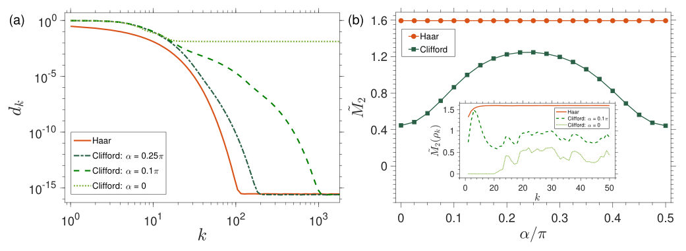
<figcaption class="paper-figure-caption"><b>Fig 1.</b> FIG. 1. Relationship between dynamics-generated quantum magic and the echo state property (ESP). (a) Temporal evolution of the trace distance dk between two reservoir states prepared in distinct conditions. The reservoir dynamics correspond to a parameterized unitary family U(α) = Rz(α)C, which is compared against a Haar-random benchmark. In the pure Clifford limit (α = 0), the ensemble-averaged dk rapidly converges to a finite, nonzero asymptotic value (∼10−2), reflecting the contribution of Clifford realizations that fail to erase the initial condition; this averaged behavior is consistent with Theorem 1, where only a finite fraction of Clifford reservoirs satisfy the ESP. In the...</figcaption>
</figure>
<figure class="paper-figure-card">
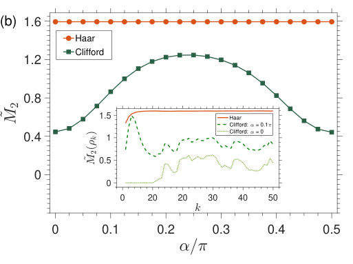
<figcaption class="paper-figure-caption"><b>Fig 2.</b> Figure 1(b) further clarifies the distinction between the dynamics-generated magic and the input-generated magic, which is brought into the system by the input state. Even when α = 0, the input injection can produce a finite baseline of state magic, because generic input states are non-stabilizer states. However, Clifford dy- namics cannot amplify this non-stabilizerness localized on the input qubit into many-body operator spreading. Consequently, this input-generated magic alone cannot remedy the information-loss issue established in Theo- rem 1. Non-Clifford dynamics, by contrast, delocalize Pauli strings across operator space, enabling the reset- induced dissipation to propagate beyond...</figcaption>
</figure>
<figure class="paper-figure-card">
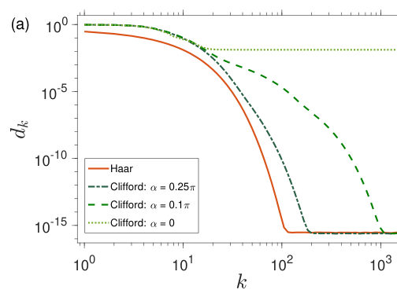
<figcaption class="paper-figure-caption"><b>Fig 3.</b> Figure 1(a) shows a clear separation between the Clif- ford and non-Clifford regimes. In the Clifford limit α = 0, the ensemble-averaged trace distance approaches a finite nonzero value, reflecting the finite fraction of Clifford reservoirs that fail to erase the initial condi- tion, consistent with Theorem 1. Once non-Clifford rotations are introduced, the trace distance decays to zero for the sampled dynamics, indicating restoration of the ESP. Although the generated magic depends non- monotonically on α, the decay rate increases with the</figcaption>
</figure>
<figure class="paper-figure-card">
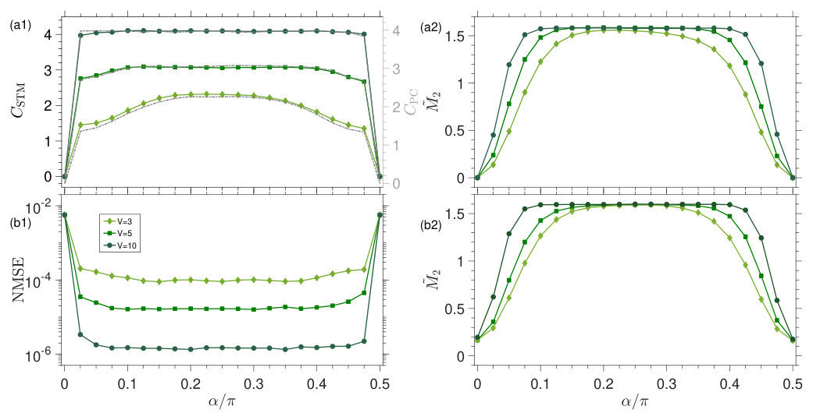
<figcaption class="paper-figure-caption"><b>Fig 4.</b> FIG. 2. Benchmark performance and dynamics-generated quantum magic under qubit resetting. (a1) Short- term memory (STM) capacity CSTM (left axis) and total parity check (PC) capacity CPC (right axis) as functions of the tuning angle α for reservoirs driven by the parameterized unitary family U(α). (a2) The corresponding 2-R´enyi magic ˜ M2 (time-averaged) generated during the STM and PC benchmarks. (b1) Normalized mean square error (NMSE) for the NARMA task as a function of α. (b2) The 2-R´enyi magic ˜ M2 generated during the NARMA benchmark. For both the STM and PC tasks, the discrete input signal uk is drawn from an independent and identically distributed (i.i.d.) uniform binary sequence....</figcaption>
</figure>
<figure class="paper-figure-card">
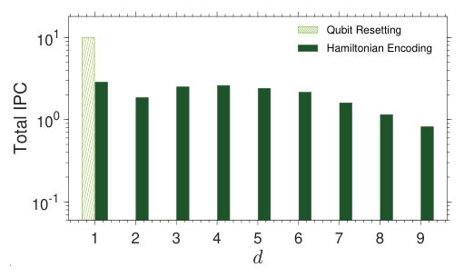
<figcaption class="paper-figure-caption"><b>Fig 5.</b> FIG. 3. Degree-resolved IPC for qubit resetting and Hamiltonian encoding. For each total degree d, the hatched and solid bars denote the total IPC obtained us- ing the qubit-resetting and Hamiltonian-encoding architec- tures, respectively. Crucially, for data at d &gt; 1, only target functions containing at least one factor with degree di &gt; 1 are included (see text). This rigorously isolates the intrinsic single-time nonlinear response from mere linear memory mix- ing. The simulations are governed by the intrinsic many-body Hamiltonian H0 defined in Eq. (21), utilizing a reservoir size of N = 5 qubits, V = 10 virtual time slots, and physical param- eters J = 1, hz = 1, ∆t = 10, and γ = 0.1....</figcaption>
</figure>
</div>

<p><strong>Summary.</strong> This work rigorously analyzes Quantum Reservoir Computing by comparing different input encoding methods. It proves that while simple schemes are limited by classical nonlinearity, embedding inputs into the Hamiltonian allows for infinitely complex, non-separable processing. Ultimately, it establishes that this general QRC model is computationally hard (BQP-hard), providing a theoretical roadmap for achieving quantum advantage in time series analysis.</p>
<p><strong>Why it may be interesting.</strong> It provides deep theoretical insights into when and how quantum dynamics can generate non-classical correlations (magic) necessary for computation, directly impacting the design principles for near-term quantum hardware.</p>
<details>
<summary>Detailed structure</summary>
<p><strong>Main problem.</strong> To develop a rigorous theoretical framework for understanding the structural conditions required for scalable quantum-enhanced performance in Quantum Reservoir Computing (QRC) for temporal processing.</p>
<p><strong>Main result.</strong> The paper establishes that Hamiltonian encoding allows QRC to achieve transcendental, infinite-order nonlinear dependence on inputs, and proves this general setting is BQP-hard, surpassing limitations found in simpler qubit-resetting schemes.</p>
<p><strong>Method.</strong> Theoretical analysis using Pauli-Liouville space formalism, comparing different input encoding schemes (qubit resetting vs. Hamiltonian embedding) and employing complexity theory reductions to prove computational hardness.</p>
<p><strong>Model / system.</strong> The model is Quantum Reservoir Computing (QRC), where temporal inputs are processed by a quantum dynamical system governed by Lindblad master equations or unitary evolution in an N-qubit setting.</p>
<p><strong>Key observables.</strong> Quantum Magic ($   ilde{M}_2(
ho)$), Echo State Property (ESP), Capacity ($C$), and the structure of the time-evolution map $F(u)$.</p>
<p><strong>Important parameters / regimes.</strong> The analysis distinguishes between regimes based on input encoding: qubit resetting vs. Hamiltonian embedding, and examines limits like high-drive strength $|u| 	o \infty$.</p>
<p><strong>Assumptions / limitations.</strong> The analysis assumes the applicability of Pauli-Liouville space representations and relies on mathematical theorems (like those related to transcendental functions) to establish computational bounds.</p>
<p><strong>Figures summary.</strong> Not specified in notes, but the structure implies comparisons between different dynamics maps and complexity proofs.</p>
<p><strong>Paper structure.</strong> The paper progresses by first analyzing the qubit-resetting scheme, identifying its expressivity bottleneck; it then introduces Hamiltonian encoding, demonstrating how it bypasses this limit by achieving transcendental nonlinearities; finally, it proves the computational power of this general setting via a BQP-hardness reduction.</p>
</details>
<details>
<summary>Abstract</summary>
<p>Quantum reservoir computing (QRC) provides a hardware-efficient paradigm for temporal information processing on near-term quantum devices. Despite rapid experimental progress, a rigorous understanding of the structural conditions required for its scalable quantum-enhanced performance remains lacking. Here, we develop a theoretical framework in Pauli-Liouville space that provides a unified analytical treatment of the echo state property (ESP), nonlinear expressive power, and quantum resources. We first analyze the widely used qubit-resetting scheme and establish that quantum magic generated by reservoir dynamics is a necessary condition for effective computation, a requirement more fundamental than ESP. However, we prove that this architecture faces inherent expressivity limitations: all nonlinear processing originates exclusively from the classical encoding map, imposing an unavoidable trade-off between nonlinearity and memory capacity. To circumvent this structural bottleneck, we rigorously analyze Hamiltonian encoding, in which temporal inputs are embedded directly into the continuous dynamics generator. We show that the ESP is natively guaranteed by the Liouvillian spectral gap, decoupling it from quantum magic. Crucially, for any non-trivial drive Hamiltonian, the discrete-time update map exhibits a transcendental, infinite-order nonlinear dependence on the instantaneous input. Moreover, the intrinsic non-commutativity of the open-system generators governs the temporal coupling of these nonlinearities, producing highly non-separable processing of the input history. Our results establish a rigorous theoretical hierarchy of QRC architectures and provide prescriptive design principles for experiments targeting genuine quantum advantages in temporal processing.</p>
</details>
<p><sub><a href="#top">↑ back to top</a></sub></p>

<p><a id="paper-2607.12981"></a></p>
<h3 id="an-agentic-formalization-for-certified-quantum-neural-network-design"><a href="http://arxiv.org/abs/2607.12981v1">An Agentic Formalization for Certified Quantum Neural Network Design</a></h3>
<p><strong>Authors:</strong> Mingrui Jing, Lei Zhang, Yusheng Zhao, Hongshun Yao, Xin Wang<br>
<strong>Type:</strong> theory · <strong>Category:</strong> quantum information and computing · <strong>PDF:</strong> <a href="https://arxiv.org/pdf/2607.12981v1">https://arxiv.org/pdf/2607.12981v1</a><br>
<strong>Analysis basis:</strong> full PDF text, analyzed in chunks
<strong>Topic relevance:</strong> <code>entanglement &amp; information structure</code> <strong>2/5</strong> · <code>Keldysh / 2PI / non-Gaussian methods</code> <strong>1/5</strong> · <code>correlated / nonlocal dissipation</code> <strong>1/5</strong> · <code>driven-dissipative phase transition</code> <strong>1/5</strong> · <code>methods for driven-dissipative</code> <strong>1/5</strong></p>
<div class="figure-strip-hint">↔ Scroll figures horizontally</div>
<div class="paper-figures-scroll">
<figure class="paper-figure-card">
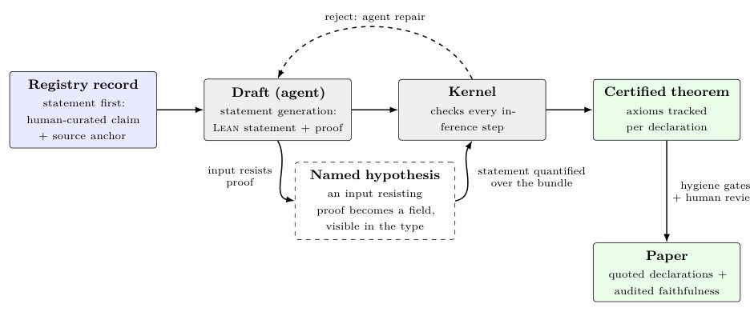
<figcaption class="paper-figure-caption"><b>Fig 1.</b> Figure 1: The development loop for agentic formalization. Each target statement is first recorded with its intended mathematical meaning and source reference. An agent then translates the statement into Lean, develops the proof, and revises it in response to kernel errors. Analytic inputs that are not yet proved are made explicit as named hypotheses, so their role remains visible and concrete instances can discharge them later. Theorems included in the manuscript must also pass automated checks for proof completeness, axiom hygiene, and declaration consistency, followed by independent human review for faithfulness to the original claim. In this workflow, agents handle formalization and...</figcaption>
</figure>
<figure class="paper-figure-card">
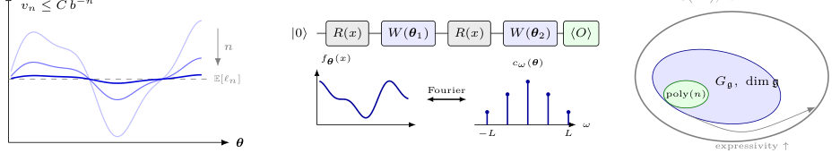
<figcaption class="paper-figure-caption"><b>Fig 2.</b> Figure 2: The three notions of Definitions 2.3 and 2.4. (a) A barren plateau as landscape concentration: sections of the loss at growing qubit count n oscillate with exponentially shrinking amplitude about the mean, vn ≤Cb−n, so the landscape flattens at scale. (b) Functional expressivity: the output fθ(x) has finite Fourier support ω ∈{−L, . . . , L}, while the trainable parameters determine its coefficients. Section 3.2 specifies the YZZYZ circuit formalized here. (c) Dynamical expressivity: Gg ⊆U(2n) denotes the connected Lie subgroup generated by the available gates, with dim Gg = dim g. This dimension ranges from polynomial growth to full controllability. Equation (7) relates it to...</figcaption>
</figure>
<figure class="paper-figure-card">
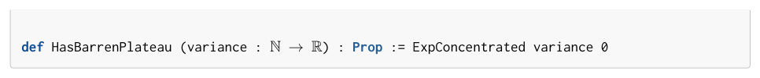
<figcaption class="paper-figure-caption"><b>Fig 3.</b> Figure 2 places the two readings beside the loss-concentration predicate of Definition 2.3. The signal- processing stack of Sec. 3 characterizes the functional reading. For the circuits studied here, the realizable classes are trigonometric, with output</figcaption>
</figure>
<figure class="paper-figure-card">
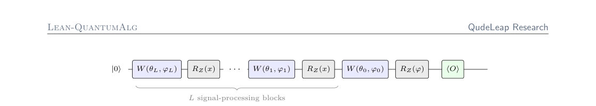
<figcaption class="paper-figure-caption"><b>Fig 4.</b> Figure 3: The YZZYZ single-qubit QSP word of Eq. (8), read left to right in time order (operators compose right to left). Trainable blocks W(θ, φ) = RY (θ)RZ(φ) (blue) alternate with the data-encoding rotation RZ(x) (gray); as a learning model this is the data re-uploading single-qubit QNN.</figcaption>
</figure>
<figure class="paper-figure-card">

<figcaption class="paper-figure-caption"><b>Fig 5.</b> Figure 4: The dynamical Lie algebra as the hub of the trainability development. Its Hermitian basis feeds the variance law, the per-family Casimir-uniqueness proof, and the simulation and capacity layers; the two-design input enters from outside, closed by proof for the single-qubit and product-Clifford ensembles.</figcaption>
</figure>
</div>

<p><strong>Summary.</strong> This paper develops a highly formal, machine-checkable theory for Quantum Neural Networks using the Lean proof assistant. It rigorously analyzes the two critical design aspects—expressivity and trainability—by proving deep mathematical results about parameterized quantum circuits. The work aims to provide a foundational, verifiable toolkit for designing future quantum machine learning algorithms.</p>
<p><strong>Why it may be interesting.</strong> While focused on computation, the rigorous mathematical machinery developed (formal proofs of algebraic identities and optimization laws) provides deep insights into the structure of quantum information processing that could inform theoretical models of complex quantum dynamics or emergent behavior in many-body systems.</p>
<details>
<summary>Detailed structure</summary>
<p><strong>Main problem.</strong> The core challenge is developing a rigorous, machine-checkable framework for designing Quantum Neural Networks (QNNs) by balancing their expressivity (representational power) against their trainability (optimization feasibility).</p>
<p><strong>Main result.</strong> The authors provide formal proofs characterizing QNN components—including single-qubit exact characterizations and loss variance laws—within a connected Lean 4 development environment.</p>
<p><strong>Method.</strong> The methodology involves formal verification using the Lean proof assistant, structuring theory around an 'agentic loop' where claims are synthesized, checked by a kernel, and audited for mathematical rigor.</p>
<p><strong>Model / system.</strong> The model is the Parameterized Quantum Circuit (PQC) used as a QNN. Analysis focuses on its functional representation via quantum signal processing and its optimization landscape analyzed using Dynamical Lie Algebra (DLA) methods.</p>
<p><strong>Key observables.</strong> Quantum Fisher information rank, loss variance ($  ext{Var}[\ell]$), and the structure of the underlying dynamical Lie algebra $\mathfrak{g}$.</p>
<p><strong>Important parameters / regimes.</strong> The circuit depth/number of gates, the dimension of the DLA, and the parameters $   heta$ defining the unitary evolution $U(	heta)$.</p>
<p><strong>Assumptions / limitations.</strong> The framework assumes that analytic inputs must either be formally proven or explicitly stated as named hypotheses; it does not yet provide a general quantum-advantage criterion.</p>
<p><strong>Figures summary.</strong> Figures illustrate the 'development loop' for formalization, comparing notions of expressivity (functional vs. dynamical) and showing the structure of the proof drafting process from human claim to certified theorem.</p>
<p><strong>Paper structure.</strong> The paper is structured around building a machine-checkable foundation in Lean 4, systematically proving theorems related to QNN theory: first addressing expressivity via circuit analysis, then tackling trainability using DLA methods, and finally synthesizing these into comprehensive design rules.</p>
</details>
<details>
<summary>Abstract</summary>
<p>A central model in quantum machine learning is the quantum neural network (QNN), whose design requires balancing expressivity and trainability. Technically, expressivity is studied through circuit-function analysis, such as quantum signal processing, while trainability is analyzed using dynamical-Lie-algebra (DLA) methods. To support certified QNN design, we formalize these major components of QNN theory in a connected lean 4 development checked by a proof kernel, where every analytic input is either proved or exposed as a named hypothesis. On the expressivity side, we prove exact if-and-only-if characterizations of single-qubit QNNs, a resource-counted quantum phase processing theorem, and an overparameterization ceiling that bounds the quantum Fisher information rank by the DLA dimension. On the trainability side, we derive the direct-sum loss-variance law through a de-circularized second-moment interface. A parameterized Casimir-uniqueness engine discharges the required inputs for fully controllable, orthogonal, and matchgate circuit families, while single-qubit and product-Clifford ensembles close the two-design assumptions directly. A capstone theorem pairs the conditional variance law with exact loss reconstruction in DLA coordinates. The development record identifies eight corrections and clarifications that were not explicit in the informal arguments. We expect this work to provide a machine-checkable foundation for QNN theory and a step toward AI-assisted or automated design of quantum machine learning algorithms.</p>
</details>
<p><sub><a href="#top">↑ back to top</a></sub></p>

<p><a id="paper-2607.12947"></a></p>
<h3 id="ancilla-depth-phase-diagrams-for-quantum-reference-frame-comparison"><a href="http://arxiv.org/abs/2607.12947v1">Ancilla-Depth Phase Diagrams for Quantum Reference-Frame Comparison</a></h3>
<p><strong>Authors:</strong> Maxim V. Churilov<br>
<strong>Type:</strong> theory · <strong>Category:</strong> quantum information and computing · <strong>PDF:</strong> <a href="https://arxiv.org/pdf/2607.12947v1">https://arxiv.org/pdf/2607.12947v1</a><br>
<strong>Analysis basis:</strong> full PDF text, analyzed in chunks
<strong>Topic relevance:</strong> <code>entanglement &amp; information structure</code> <strong>2/5</strong> · <code>Keldysh / 2PI / non-Gaussian methods</code> <strong>1/5</strong> · <code>correlated / nonlocal dissipation</code> <strong>1/5</strong> · <code>driven-dissipative phase transition</code> <strong>1/5</strong> · <code>methods for driven-dissipative</code> <strong>1/5</strong></p>
<div class="figure-strip-hint">↔ Scroll figures horizontally</div>
<div class="paper-figures-scroll">
<figure class="paper-figure-card">

<figcaption class="paper-figure-caption"><b>Fig 1.</b> FIG. 1. Exact positivity bands for the ratio b/a in dimension d = 6. Crossing the boundary −1/(dr −1) activates an r- dimensional witness.</figcaption>
</figure>
<figure class="paper-figure-card">

<figcaption class="paper-figure-caption"><b>Fig 2.</b> FIG. 2. Exact physical conversion cost for the boundary hierarchy at fixed source parameter. Statistical simulation remains exact through level k, although the CPTP conversion cost is positive.</figcaption>
</figure>
<figure class="paper-figure-card">

<figcaption class="paper-figure-caption"><b>Fig 3.</b> FIG. 3. Exact CPTP conversion deficiency on the full physical (a, b) square for d = 4, including negative and singular sources. The zero region is the union of the reachable intervals b ∈Ia; the vertical section a = 0 has cost |b|(1 −1/d2).</figcaption>
</figure>
</div>

<p><strong>Summary.</strong> This paper develops a theory to quantify when one noisy quantum channel can be statistically simulated by another, depending on the size of an auxiliary memory. It establishes criteria based on $r$-positivity and provides explicit phase diagrams for depolarizing channels. The findings are vital for understanding the distinction between theoretical simulation limits and actual physical implementability in quantum information tasks.</p>
<p><strong>Why it may be interesting.</strong> The work provides rigorous mathematical tools for determining the fundamental limits of quantum process comparison, which is crucial for understanding resource quantification in open quantum systems and channel characterization.</p>
<details>
<summary>Detailed structure</summary>
<p><strong>Main problem.</strong> The paper addresses how the comparison of two noisy quantum reference frames (channels) can be characterized by the dimension of ancillary memory available for statistical testing.</p>
<p><strong>Main result.</strong> It establishes that simulation capability is equivalent to the $r$-positivity of a derived factor $\Gamma = BA^{-1}$, and quantifies physical limitations using concepts like restricted deficiency and distance to physical post-processing.</p>
<p><strong>Method.</strong> The analysis relies on theoretical tools including $r$-positivity criteria, Choi matrices, and deriving closed formulas for resource gaps based on the ratio of channel parameters ($\lambda=b/a$).</p>
<p><strong>Model / system.</strong> The model involves finite-dimensional quantum channels, specifically analyzing depolarizing channels ($D_\lambda$) as representative physical systems.</p>
<p><strong>Key observables.</strong> Restricted level-$r$ deficiency, distance to physical post-processing ($\delta_{	ext{phys}}$), and the required ancillary dimension $r$.</p>
<p><strong>Important parameters / regimes.</strong> Ancilla dimension ($r$), channel parameters ($a, b$), and the ratio $\lambda = b/a$.</p>
<p><strong>Assumptions / limitations.</strong> The results are derived for finite-dimensional models and distinguish between statistical simulation capabilities versus physical implementability via a single quantum channel.</p>
<p><strong>Figures summary.</strong> Figures illustrate exact positivity bands in parameter space (e.g., $d=6$) showing how crossing boundaries activates specific ancillary witnesses, and plot the physical conversion cost $\delta_{	ext{phys}}$ vs. source parameters.</p>
<p><strong>Paper structure.</strong> The paper progresses from defining the statistical simulation problem using ancilla memory ($r$-positivity) to deriving general theorems relating this condition to factors ($\Gamma$), then applying these results specifically to depolarizing channels to map out phase diagrams, and finally quantifying physical gaps invisible at lower testing levels.</p>
</details>
<details>
<summary>Abstract</summary>
<p>Comparing two noisy quantum reference frames as statistical experiments depends on the dimension of the ancillary memory available to the decision procedure. For finite-dimensional channels A and B with invertible A, we show that exact simulation of all measurements assisted by an r-dimensional ancilla is equivalent to r-positivity of the unique factor Gamma = BA^{-1}. The hierarchy can be realized by physical channel pairs: every unital, trace-preserving map that is k-positive but not (k+1)-positive embeds as the factor between the channels D_a and Gamma composed with D_a on an exact interval determined by the smallest Choi eigenvalue. For depolarizing source and target channels D_a and D_b, including negative and singular source parameters, the phase boundary is $\mathcal{D}_a \succeq_r \mathcal{D}_b \Longleftrightarrow -1/(dr-1) \leq b/a \leq 1$ for $a\neq 0$. We derive closed formulas for the restricted level-r deficiency and for the distance to every physical post-processing, $δ_{\mathrm{phys}}(\mathcal{D}_b\mid\mathcal{D}_a)=(1-1/d^2)\operatorname{dist}(b,I_a)$, where $I_a=\operatorname{conv}\{a,-a/(d^2-1)\}$. The largest physical conversion cost hidden from all tests through level k is $(d-k)/[d(d^2-1)]$. An untouched m-level spectator changes the first detecting external level from k+1 to $\lfloor k/m\rfloor+1$. A transpose--depolarizing construction shows that the separation is not confined to depolarizing factors. The results quantify the distinction between ancilla-restricted statistical simulation and implementation by a single quantum channel.</p>
</details>
<p><sub><a href="#top">↑ back to top</a></sub></p>

<p><a id="paper-2607.12994"></a></p>
<h3 id="fixed-boost-wigner-noise-strict-trace-distance-contraction-without-quantum-degradability"><a href="http://arxiv.org/abs/2607.12994v1">Fixed-Boost Wigner Noise: Strict Trace-Distance Contraction without Quantum Degradability</a></h3>
<p><strong>Authors:</strong> Maxim V. Churilov<br>
<strong>Type:</strong> theory · <strong>Category:</strong> quantum information and computing · <strong>PDF:</strong> <a href="https://arxiv.org/pdf/2607.12994v1">https://arxiv.org/pdf/2607.12994v1</a><br>
<strong>Analysis basis:</strong> full PDF text, analyzed in chunks
<strong>Topic relevance:</strong> <code>entanglement &amp; information structure</code> <strong>2/5</strong> · <code>correlated / nonlocal dissipation</code> <strong>1/5</strong> · <code>exotic spin models in light-matter</code> <strong>1/5</strong> · <code>non-equilibrium dynamics</code> <strong>1/5</strong></p>
<div class="figure-strip-hint">↔ Scroll figures horizontally</div>
<div class="paper-figures-scroll">
<figure class="paper-figure-card">

<figcaption class="paper-figure-caption"><b>Fig 1.</b> FIG. 1. All three target contrasts lie below the source contrasts for one fixed boost, while the unique factor has a negative Choi eigenvalue. Parameters shown: u = 0.20, v = 0.45.</figcaption>
</figure>
<figure class="paper-figure-card">

<figcaption class="paper-figure-caption"><b>Fig 2.</b> FIG. 2. Exact directed CPTP deficiency δ⋄(β|α) on the Pauli line. The diagonal is the only zero set in the positive-noise interior; the edge α = 0 is also zero because every target is a post-processing of the identity.</figcaption>
</figure>
<figure class="paper-figure-card">

<figcaption class="paper-figure-caption"><b>Fig 3.</b> FIG. 3. Analytic nondegradability margin from Eq. (21). The effect is strict for every nonzero Wigner angle and every 0 &lt; u &lt; v &lt; 1/2.</figcaption>
</figure>
</div>

<p><strong>Summary.</strong> This theoretical paper analyzes the noise introduced to particle spin states by a fixed Lorentz boost. It demonstrates that even when all pairwise distinguishabilities decrease monotonically, this reduction cannot be modeled by a single, universal quantum channel (CPTP map). This shows that local measures of information loss are insufficient for characterizing global quantum processing constraints.</p>
<p><strong>Why it may be interesting.</strong> It provides rigorous mathematical constraints on how quantum information degrades under relativistic kinematics, offering insights into fundamental limitations that go beyond simple componentwise damping assumptions.</p>
<details>
<summary>Detailed structure</summary>
<p><strong>Main problem.</strong> The paper investigates whether strict contraction of pairwise spin-state trace distance under a fixed Lorentz boost implies the existence of a state-independent quantum channel that performs this reduction.</p>
<p><strong>Main result.</strong> It proves a counterexample showing that while all pairwise spin contrasts can decrease after a fixed boost, no single CPTP map exists to account for this reduction, meaning ordering distinguishabilities does not determine post-processing order.</p>
<p><strong>Method.</strong> The analysis uses mathematical characterizations of channel cones (for spin 1/2), deriving explicit formulas for operational gaps ($\delta_\diamond$), and constructing counterexamples based on the failure of unique factor criteria.</p>
<p><strong>Model / system.</strong> The system models massive particles undergoing Lorentz boosts, with spin states analyzed via Wigner rotations. The noise is characterized by fixed-boost channels acting on spin qubits (Pauli mixtures).</p>
<p><strong>Key observables.</strong> Pairwise spin-state trace distance ($\|\cdot\|_1$), normalized Choi eigenvalues ($\lambda_{\min}$), and the directed CPTP deficiency ($\delta_\diamond$).</p>
<p><strong>Important parameters / regimes.</strong> The boost parameters defining the source ($u$) and target ($v$) channels, and perturbation sizes ($\epsilon$ or $\alpha$).</p>
<p><strong>Assumptions / limitations.</strong> The analysis is restricted to an 'autonomous product preparation' of spin and momentum states; counterexamples are constructed for fixed boosts.</p>
<p><strong>Figures summary.</strong> Figures illustrate that the target contrasts can fall below source contrasts, accompanied by negative Choi eigenvalues, demonstrating non-degradability. Other figures plot the exact directed CPTP deficiency on the Pauli line.</p>
<p><strong>Paper structure.</strong> The paper progresses from defining the physical problem (Lorentz boosts and spin noise) to characterizing the resulting channel cone structure. It then constructs a concrete counterexample using specific weights ($u, v$) and derives quantitative measures for the operational gap ($\delta_\diamond$), concluding with theorems showing violations of Pauli-Markovian semigroup embedding.</p>
</details>
<details>
<summary>Abstract</summary>
<p>A Lorentz boost acts on the canonical spin of a massive particle through a momentum-dependent Wigner rotation. We show that, for one fixed observer boost, reducing over an uncertain momentum can strictly contract every pairwise spin-state trace distance without producing a channel that is degradable from the less contracted one. For spin $1/2$, we first characterize the exact inversion-symmetric channel cone generated by a fixed Wigner angle and transverse momentum directions. Inside this cone lies the Pauli family $M_α=\operatorname{diag}(1-α,1-α,1-2α)$, $0\leqα<1/2$. For $0<α<β<1/2$, all trace distances between distinct spin states are strictly smaller after $M_β$ than after $M_α$, yet the unique linear post-processing factor has a negative normalized Choi eigenvalue. We solve the optimization over all physical converters exactly: $\frac{1}{2}\inf_{Λ\in\mathrm{CPTP}}\|Φ_β-Λ\circΦ_α\|_\diamond=\frac{α(β-α)}{2-3α}$, whereas the reverse deficiency is $β-α$. Thus the identity dominates the family, while all positive-noise members are pairwise incomparable under CPTP post-processing. The ideal construction is realized as the narrow-packet limit of pure, normalizable five-component momentum states, and explicit perturbation and finite-shot tomography bounds certify an open set of examples. Separately, every nonidentity member fails embedding in a time-homogeneous Pauli-diagonal Lindblad semigroup. Hence ordering all unassisted spin distinguishabilities does not determine the quantum statistical post-processing order.</p>
</details>
<p><sub><a href="#top">↑ back to top</a></sub></p>

<p><a id="paper-2607.12848"></a></p>
<h3 id="time-independent-counterdiabatic-driving-for-emergent-two-level-subspaces-in-many-body-systems"><a href="http://arxiv.org/abs/2607.12848v1">Time-independent counterdiabatic driving for emergent two-level subspaces in many-body systems</a></h3>
<p><strong>Authors:</strong> S. Dengis, P. Schlagheck<br>
<strong>Type:</strong> theory · <strong>Category:</strong> other · <strong>PDF:</strong> <a href="https://arxiv.org/pdf/2607.12848v1">https://arxiv.org/pdf/2607.12848v1</a><br>
<strong>Analysis basis:</strong> full PDF text, analyzed in chunks
<strong>Topic relevance:</strong> <code>Rydberg arrays</code> <strong>2/5</strong> · <code>analog quantum simulation</code> <strong>1/5</strong> · <code>methods for driven-dissipative</code> <strong>1/5</strong> · <code>non-equilibrium dynamics</code> <strong>1/5</strong></p>
<div class="figure-strip-hint">↔ Scroll figures horizontally</div>
<div class="paper-figures-scroll">
<figure class="paper-figure-card">

<figcaption class="paper-figure-caption"><b>Fig 1.</b> FIG. 1. Geometric origin of constant counterdiabatic driving. Geodesic protocols correspond to straight lines in Riemann normal coordinates, yielding a constant quantum speed and therefore a constant norm of the counterdiabatic Hamiltonian. In contrast, arbitrary protocols experience a parameter-dependent quantum metric, causing the required counterdiabatic field to become stronger in regions where the energy gap is small. The two panels illustrate the equivalent representation obtained after transforming to normal coordi- nates, where the geometry is flattened while the gap structure remains encoded in the background. Arrow lengths repre- sent the counterdiabatic Hamiltonian norm, which is...</figcaption>
</figure>
<figure class="paper-figure-card">

<figcaption class="paper-figure-caption"><b>Fig 2.</b> FIG. 2. Application of constant counterdiabatic driv- ing (cCD) to Landau-Zener system. (a) Gap landscape of the Landau-Zener Hamiltonian, with ∆E = 2 √</figcaption>
</figure>
<figure class="paper-figure-card">

<figcaption class="paper-figure-caption"><b>Fig 3.</b> FIG. 3. Application of constant counterdiabatic driv- ing to STIRAP. (a) Population transfer from |1⟩to |3⟩ along the geodesic path, for T = 10ℏ/Ω0. (b) Geodesic pulse sequence generating a constant counterdiabatic correc- tion. (c) Final fidelity versus detuning ∆for different proto- col durations. The constant-amplitude counterdiabatic field completely suppresses the loss of fidelity observed in the stan- dard protocol. (d) Final fidelity versus protocol duration for ∆/Ω0 = 10. Constant counterdiabatic driving achieves per- fect state preparation over the entire range of durations con- sidered, demonstrating that the geodesic construction extends naturally beyond effective two-level...</figcaption>
</figure>
<figure class="paper-figure-card">

<figcaption class="paper-figure-caption"><b>Fig 4.</b> FIG. 4. Application of constant counterdiabatic driv- ing to a collectively driven Rydberg ensemble in the blockade regime, for V = 50Ω. (a) Many-body spectrum as a function of the laser detuning ∆. The shaded region highlights the effective Landau-Zener subspace spanned by the collective ground state |G⟩and the singly excited state |W⟩, in the strong Rydberg interaction regime V ≫Ω, for N = 5 and T = 0.5ℏ/Ω. (b) Overlap between the Landau- Zener subspace projector ˆPsu(2) = |G⟩⟨G| + |W⟩⟨W| and the eigenstates of the Hamiltonian (9) as a function of the block- ade ratio V/Ω, for ∆= 0 and N = 5. (c) Final fidelity FGS(T) as a function of the protocol duration for different atom numbers N.</figcaption>
</figure>
</div>

<p><strong>Summary.</strong> The paper develops a theoretical framework showing that following geodesic paths on the quantum state manifold naturally leads to constant counterdiabatic driving. This allows for the design of fast, high-fidelity quantum control protocols using time-independent auxiliary fields, which is demonstrated successfully across models ranging from simple two-level systems to complex Rydberg ensembles.</p>
<p><strong>Why it may be interesting.</strong> This work provides a powerful geometric tool for designing quantum control pulses, moving beyond simple time-dependent shaping by showing how fundamental principles (geodesics) can enforce simplicity (time-independent controls) while maintaining speed and fidelity in complex many-body settings.</p>
<details>
<summary>Detailed structure</summary>
<p><strong>Main problem.</strong> The primary challenge is achieving high-fidelity quantum state preparation on timescales much shorter than conventional adiabatic protocols.</p>
<p><strong>Main result.</strong> Geodesic motion in the quantum state manifold allows for the construction of a time-independent counterdiabatic Hamiltonian, enabling fast, high-fidelity control.</p>
<p><strong>Method.</strong> The authors utilize Riemannian geometry by relating the required counterdiabatic Hamiltonian norm to the quantum metric tensor along geodesic paths in the parameter space.</p>
<p><strong>Model / system.</strong> The theory is illustrated using several models: the Landau-Zener model, three-level STIRAP, and a Rydberg ensemble operating in the blockade regime. These systems are used to demonstrate the principle of constant counterdiabatic driving.</p>
<p><strong>Key observables.</strong> Final state fidelity ($F_{GS}(T)$), the norm of the counterdiabatic Hamiltonian ($\|	ext{H}_{	ext{CD}}\|$), and protocol duration ($T$).</p>
<p><strong>Important parameters / regimes.</strong> The blockade interaction strength ($V$), Rabi frequencies ($\Omega$), detunings ($\Delta$), and the geometric length scale ($\ell_{	ext{geo}}$).</p>
<p><strong>Assumptions / limitations.</strong> The analysis assumes that the system dynamics can be effectively reduced to a two-level subspace, and that following a geodesic path minimizes the required control effort.</p>
<p><strong>Figures summary.</strong> Figures illustrate how geodesic driving maintains a constant norm for $    ext{H}_{    ext{CD}}$ compared to other protocols. They show unit fidelity achieved with time-independent cCD in Landau-Zener, STIRAP, and Rydberg blockade systems over various timescales.</p>
<p><strong>Paper structure.</strong> The paper first establishes the geometric connection between geodesics and constant $\|	ext{H}_{	ext{CD}}\|$. It then applies this framework to specific physical models (LZ, STIRAP, Rydberg) to demonstrate that time-independent cCD achieves fast, high-fidelity state preparation. Finally, it discusses limitations related to subspace leakage.</p>
</details>
<details>
<summary>Abstract</summary>
<p>We show that geodesic motion in the Riemannian manifold of quantum states provides a direct route to time-independent counterdiabatic driving. Using the relation between the counterdiabatic Hamiltonian and the quantum metric tensor, we prove that a constant-speed geodesic makes the Hilbert-Schmidt norm of the counterdiabatic Hamiltonian constant. For effective two-level systems whose counterdiabatic correction has a fixed operator direction, this further implies that the full counterdiabatic Hamiltonian itself is time independent. We illustrate this result with the Landau-Zener model, three-level Stimulated Raman adiabatic passage and a collectively driven Rydberg ensemble in the blockade regime. Limitations of this approach in realistic many-body systems are discussed, where the two-level reduction is only emergent and leakage out of the effective subspace bounds the achievable speedup. In all cases, time-independent counterdiabatic driving achieves unit-fidelity state preparation on timescales substantially shorter than conventional adiabatic protocols while replacing temporally shaped auxiliary controls by fixed-amplitude fields.</p>
</details>
<p><sub><a href="#top">↑ back to top</a></sub></p>

<p><a id="paper-2607.12174"></a></p>
<h3 id="anticipating-decoder-side-channel-attacks-in-fault-tolerant-quantum-computers"><a href="http://arxiv.org/abs/2607.12174v1">Anticipating Decoder Side-channel Attacks in Fault-tolerant Quantum Computers</a></h3>
<p><strong>Authors:</strong> Shashvat Shukla, Dan E. Browne, Shin Nishio<br>
<strong>Type:</strong> theory · <strong>Category:</strong> quantum information and computing · <strong>PDF:</strong> <a href="https://arxiv.org/pdf/2607.12174v1">https://arxiv.org/pdf/2607.12174v1</a><br>
<strong>Analysis basis:</strong> full PDF text, analyzed in chunks
<strong>Topic relevance:</strong> <code>quantum measurements</code> <strong>2/5</strong> · <code>entanglement &amp; information structure</code> <strong>1/5</strong> · <code>measurement-induced transitions</code> <strong>1/5</strong></p>
<div class="figure-strip-hint">↔ Scroll figures horizontally</div>
<div class="paper-figures-scroll">
<figure class="paper-figure-card">

<figcaption class="paper-figure-caption"><b>Fig 1.</b> Fig. 1: Threat model for decoder-side confidentiality leakage. The decoder is honest-but-curious, which is assumed to per- form its task of estimating the Pauli frame from the spacetime syndrome, but is not trusted with respect to confidentiality. Even without being given an explicit circuit description, the information available at the decoder interface may be exploited to infer properties of the hidden logical computation, such as the logical gate applied in a given decoding window.</figcaption>
</figure>
<figure class="paper-figure-card">

<figcaption class="paper-figure-caption"><b>Fig 2.</b> Fig. 3: Gate fingerprint of transversal CX gate on a pair of d = 5 rotated surface code patch. Detector-event probabilities are shown over space and time for the control and target patches. The resulting signature is localized in time but spread over both patches, consistent with the coordinated two-block interaction of the transversal implementation. We set the phys- ical error rates to pidle = 10−3, p1q = 5 × 10−3, p2q = 10−2, preset = 10−3, and pmeas = 10−3.</figcaption>
</figure>
<figure class="paper-figure-card">

<figcaption class="paper-figure-caption"><b>Fig 3.</b> Fig. 4: Gate fingerprint of lattice surgery-based CX gate. The boundary associated with the XX (ZZ) measurement is high- lighted by a localized increase in detector-event probability.</figcaption>
</figure>
<figure class="paper-figure-card">

<figcaption class="paper-figure-caption"><b>Fig 4.</b> Fig. 5: Classification metrics for logical gates. H, S, and lattice surgery exhibit distinctive fingerprints and are therefore generally classified correctly, whereas the Pauli gates X, Y , and Z share the same fingerprint under the unbiased Pauli channel, rendering them indistinguishable. 1000 shots per logical gate and 10000 shots for training.</figcaption>
</figure>
<figure class="paper-figure-card">

<figcaption class="paper-figure-caption"><b>Fig 5.</b> Fig. 6: Rolling mean gate counts of the amplitude amplifica- tion circuit as seen by the decoder.</figcaption>
</figure>
</div>

<p><strong>Summary.</strong> This work details a side-channel attack where an untrusted error correction decoder can deduce the underlying quantum algorithm by analyzing patterns (gate fingerprints) hidden within the syndrome measurement data. The authors demonstrate that these leakage channels exist even in fault-tolerant settings, necessitating that decoder systems be secured or treated as trusted components.</p>
<p><strong>Why it may be interesting.</strong> It provides a concrete, information-theoretic security vulnerability in the control/readout layer of quantum computation, which is highly relevant for anyone designing or simulating large-scale quantum hardware.</p>
<details>
<summary>Detailed structure</summary>
<p><strong>Main problem.</strong> The paper identifies a novel side-channel attack vector against fault-tolerant quantum computers where an untrusted decoder can infer the executed logical computation by analyzing syndrome data.</p>
<p><strong>Main result.</strong> Distinct logical operations leave detectable statistical patterns, called 'gate fingerprints,' in the spacetime syndrome data processed by the decoder.</p>
<p><strong>Method.</strong> The analysis formalizes this leakage by defining gate fingerprints as conditional distributions of the spacetime syndrome given a hidden logical gate, using surface code models.</p>
<p><strong>Model / system.</strong> The system modeled is Fault-Tolerant Quantum Computing (FTQC) utilizing surface codes and Clifford+T gates. The attack targets the decoder which processes syndrome measurements derived from stabilizer checks.</p>
<p><strong>Key observables.</strong> Spacetime syndrome data, gate fingerprints (statistical patterns in syndrome outcomes), and reconstructed logical gate sequences/ratios over time.</p>
<p><strong>Important parameters / regimes.</strong> The type of computation (e.g., Amplitude Amplification, HHL) and the level of decoder knowledge (qubit-aware vs. qubit-unaware).</p>
<p><strong>Assumptions / limitations.</strong> The decoder is assumed to be correct in its decoding function but untrusted regarding confidentiality; leakage occurs through syndrome data.</p>
<p><strong>Figures summary.</strong> Figures illustrate the threat model flow, show rolling average gate counts for specific algorithms (AA, HHL, QFT), and demonstrate circuit reconstruction via majority voting on repeating patterns.</p>
<p><strong>Paper structure.</strong> The paper proceeds by formalizing the syndrome leakage setting, defining gate fingerprints using surface code analysis of Clifford+T gates, showing how adversaries combine these fingerprints to infer circuits, and concluding with security recommendations.</p>
</details>
<details>
<summary>Abstract</summary>
<p>As quantum computing emerges as an applied technology, there is a growing need to protect quantum computers against information security attacks. This work identifies a new class of side-channel attacks against fault-tolerant quantum computers, in which the syndrome data that is sent to the decoder system is used to infer which computation (logical circuit) is taking place on the quantum computer. Our work introduces the concept of gate fingerprints, which describes those patterns present in syndrome data that indicate which logical operation took place on the quantum computer. We show different effects by which logical operations produce gate fingerprints by focusing on Clifford+T computation in the surface code. We then explore how gate fingerprint information can be used to make inferences about the circuits or algorithms run on a quantum computer. Our findings indicate that decoder systems can be a vector for side-channel attacks and thus to prevent this, decoder systems should either be secured or built by a trusted party.</p>
</details>
<p><sub><a href="#top">↑ back to top</a></sub></p>

<p><a id="paper-2607.12828"></a></p>
<h3 id="detecting-phishing-in-ethereum-networks-using-quantum-machine-learning"><a href="http://arxiv.org/abs/2607.12828v1">Detecting Phishing in Ethereum Networks using Quantum Machine Learning</a></h3>
<p><strong>Authors:</strong> Sai Sakunthala Guddanti, Anupama Ray, Mrunal Arun Kumavat, Anil Prabhakar<br>
<strong>Type:</strong> both · <strong>Category:</strong> quantum information and computing · <strong>PDF:</strong> <a href="https://arxiv.org/pdf/2607.12828v1">https://arxiv.org/pdf/2607.12828v1</a><br>
<strong>Analysis basis:</strong> full PDF text, analyzed in chunks
<strong>Topic relevance:</strong> <code>entanglement &amp; information structure</code> <strong>2/5</strong> · <code>QC/QI experiment</code> <strong>1/5</strong> · <code>methods for driven-dissipative</code> <strong>1/5</strong></p>
<div class="figure-strip-hint">↔ Scroll figures horizontally</div>
<div class="paper-figures-scroll">
<figure class="paper-figure-card">

<figcaption class="paper-figure-caption"><b>Fig 1.</b> Fig. 1 The four states of (2,1)-QRAC as corners of square (left) and the eight states of (3,1)-QRAC as corners of cube (right).</figcaption>
</figure>
<figure class="paper-figure-card">

<figcaption class="paper-figure-caption"><b>Fig 2.</b> Fig. 2 The feature encoding scheme of 2 qubit (2,1)-QRAC, based upon mutually orthogonal plane rotations</figcaption>
</figure>
<figure class="paper-figure-card">

<figcaption class="paper-figure-caption"><b>Fig 3.</b> Fig. 3 Two level stacking technique implemented</figcaption>
</figure>
<figure class="paper-figure-card">

<figcaption class="paper-figure-caption"><b>Fig 4.</b> Fig. 4 Macro average of Precision, Recall and F1 scores of individual classical and quantum models trained using same train (160p and 160np) and test data (1000p and 10000np).</figcaption>
</figure>
<figure class="paper-figure-card">

<figcaption class="paper-figure-caption"><b>Fig 5.</b> Fig. 5 False negatives count of individual models and best performing model combinations.</figcaption>
</figure>
</div>

<p><strong>Summary.</strong> This paper applies Quantum Machine Learning (QML) techniques, specifically QSVM and VQC, to detect phishing attacks on Ethereum transaction networks. The authors introduce a novel cascaded QRAC encoding scheme that improves performance over standard methods. They propose a hybrid quantum-classical ensemble framework, demonstrating its effectiveness while also analyzing the resilience of these models when run on near-term quantum hardware.</p>
<p><strong>Why it may be interesting.</strong> While focused on finance, the methodology involves applying quantum feature mapping and kernel estimation to complex, structured data, which shares conceptual links with how entanglement or correlation structures are analyzed in many-body physics simulations.</p>
<details>
<summary>Detailed structure</summary>
<p><strong>Main problem.</strong> The primary goal is detecting anomalies, specifically phishing activity, within real-world Ethereum financial transaction networks.</p>
<p><strong>Main result.</strong> A hybrid quantum-classical ensemble framework combining QSVM and GCN showed strong performance, with QRAC encoding consistently improving results over standard feature maps on both simulators and hardware.</p>
<p><strong>Method.</strong> The authors employ Quantum Machine Learning (QML) models like QSVM and VQC, enhanced by novel cascaded Quantum Random Access Coding (QRAC) schemes for data encoding.</p>
<p><strong>Model / system.</strong> The work is tested on quantum computing platforms, including IBM statevector simulators and the physical IBM Heron quantum processor. The core models are QSVM and VQC applied to Ethereum transaction graph data.</p>
<p><strong>Key observables.</strong> False negatives count, Recall rates, Macro average of Precision/Recall/F1 score, and performance degradation comparing simulator vs. hardware results.</p>
<p><strong>Important parameters / regimes.</strong> The dataset is highly imbalanced (2500:1 ratio); encoding schemes include ZZ feature map versus cascaded QRACs; quantum volume is a key hardware metric.</p>
<p><strong>Assumptions / limitations.</strong> Performance improvements are demonstrated despite current NISQ hardware limitations, and the authors assume that hybrid classical-quantum approaches can bridge the gap to deep learning techniques.</p>
<p><strong>Figures summary.</strong> Figures illustrate the geometry of QRAC states on the Bloch sphere (e.g., corners of a square/cube) and detail the feature encoding scheme using orthogonal planes ($  ext{xy, yz, xz}$).</p>
<p><strong>Paper structure.</strong> The paper progresses from identifying the anomaly detection problem to proposing QML models (QSVM/VQC), detailing advanced data encoding techniques (QRAC vs. ZZ map), benchmarking these methods on both simulators and hardware, and finally presenting an ensemble framework for robust results.</p>
</details>
<details>
<summary>Abstract</summary>
<p>This article explores the potential of Quantum Machine Learning (QML), specifically assessing a Quantum Support Vector Machine (QSVM) and a Variational Quantum Classifier (VQC) for detecting anomalies in real-world financial transaction data. While these QML methods outperform statistical methods, they fall short of cutting-edge deep learning techniques. To bridge this gap, we propose a hybrid quantum-classical ensemble framework that leverages the strengths of both domains. We demonstrate its effectiveness in detecting phishing in Ethereum transaction networks by combining complementary algorithms. The QSVM, whether used individually or in an ensemble, consistently delivered the lowest false negatives and higher recall rates, that are crucial for anomaly detection. To enhance individual models, we encoded the data using novel cascaded Quantum Random Access Coding (QRAC) schemes and compared it with the popular encoding ZZ feature map on both simulators and the IBM Heron quantum processor. For both QSVM and VQC, we consistently observed improvements (13% for QRAC-VQC and 3% for QRAC-QSVM) of QRAC over the ZZ feature map. Notably, certain QML algorithms exhibit remarkable resilience on the IBM Heron quantum processor, approaching simulator-level performance on devices with high quantum volume. This observation underscores the promise of QML despite hardware limitations.</p>
</details>
<p><sub><a href="#top">↑ back to top</a></sub></p>

<p><a id="paper-2607.12029"></a></p>
<h3 id="logarithmic-corrections-to-bulk-and-surface-criticality-in-a-three-dimensional-quantum-heisenberg-antiferromagnet"><a href="http://arxiv.org/abs/2607.12029v1">Logarithmic corrections to bulk and surface criticality in a three-dimensional quantum Heisenberg antiferromagnet</a></h3>
<p><strong>Authors:</strong> Xuyang Liang, Xiao-Chuan Wu, Zenan Liu, Zhe Wang, Zheng Yan, Dao-Xin Yao<br>
<strong>Type:</strong> both · <strong>Category:</strong> other · <strong>PDF:</strong> <a href="https://arxiv.org/pdf/2607.12029v1">https://arxiv.org/pdf/2607.12029v1</a><br>
<strong>Analysis basis:</strong> full PDF text, analyzed in chunks
<strong>Topic relevance:</strong> <code>analog quantum simulation</code> <strong>2/5</strong> · <code>driven-dissipative phase transition</code> <strong>1/5</strong> · <code>exotic spin models in light-matter</code> <strong>1/5</strong></p>
<div class="figure-strip-hint">↔ Scroll figures horizontally</div>
<div class="paper-figures-scroll">
<figure class="paper-figure-card">

<figcaption class="paper-figure-caption"><b>Fig 1.</b> Figure 1. The columnar-dimerized lattice of the quantum Heisenberg antiferromagnet, where J1 and J2 denote the weak and strong bulk exchange couplings, respectively, and Js is the exchange coupling within the boundary layers.</figcaption>
</figure>
<figure class="paper-figure-card">

<figcaption class="paper-figure-caption"><b>Fig 2.</b> Figure 2. Bulk observables of the columnar-dimerized model at the bulk QCP. (a) Scaled staggered susceptibility χ(Q)L−2</figcaption>
</figure>
<figure class="paper-figure-card">

<figcaption class="paper-figure-caption"><b>Fig 3.</b> Figure 3. The surface Binder ratio R2 versus Js for different system sizes at the bulk QCP. The inset shows the finite-size es- timates Jsc(L) obtained from the crossings of curves for pairs of system sizes L and 2L, and the line represents the fitting function in Eq. (14) by neglecting the logarithmic correction. The blue symbol shows the extrapolated value in the thermo- dynamic limit.</figcaption>
</figure>
<figure class="paper-figure-card">

<figcaption class="paper-figure-caption"><b>Fig 4.</b> Figure 5. (a) Squared surface staggered magnetization mz s 2 and correlation function C∥(L/2) versus 1/L and (b) the scaled cor- relation function C⊥(L/2)L versus system size L in the extraor- dinary regime. The dotted lines represent the least-squares fits.</figcaption>
</figure>
<figure class="paper-figure-card">

<figcaption class="paper-figure-caption"><b>Fig 5.</b> Figure 4. (a) The scaled correlation functions C∥(L/2)L2 and C⊥(L/2)L2 versus L at the special transition. (b) The scaled correlation functions C⊥(L/2)L3 as a function of L for several values of Js in the ordinary regime.</figcaption>
</figure>
</div>

<p><strong>Summary.</strong> This paper rigorously examines the impact of logarithmic corrections on the critical behavior of a 3D quantum Heisenberg antiferromagnet at its surface. By combining large-scale Quantum Monte Carlo simulations with Boundary Renormalization Group theory, the authors characterize three distinct boundary regimes (ordinary, special, extraordinary). The work provides new theoretical predictions and quantitative numerical evidence for how these logarithmic terms govern finite-size scaling near the quantum critical point.</p>
<p><strong>Why it may be interesting.</strong> The detailed study of boundary critical phenomena, especially incorporating higher-order logarithmic corrections beyond mean-field theory, provides crucial insights into how dimensionality reduction or boundaries modify fundamental quantum phase transitions relevant to strongly correlated materials.</p>
<details>
<summary>Detailed structure</summary>
<p><strong>Main problem.</strong> The study investigates how logarithmic corrections modify critical behavior at both the bulk and surface levels of a quantum antiferromagnet near its upper critical dimension.</p>
<p><strong>Main result.</strong> The authors derive new, quantitatively supported logarithmic correction exponents for boundary correlations in ordinary and special transition regimes, while also confirming long-range surface order in the extraordinary regime.</p>
<p><strong>Method.</strong> The research combines large-scale Quantum Monte Carlo (QMC) simulations with rigorous Boundary Renormalization Group (RG) analysis to analyze finite-size scaling.</p>
<p><strong>Model / system.</strong> The system is a spin-1/2 columnar-dimerized quantum Heisenberg antiferromagnet realizing a (3+1)D O(3) quantum critical point. The Hamiltonian includes bulk and surface coupling terms ($J_1, J_2, J_s$).</p>
<p><strong>Key observables.</strong> Bulk staggered moment ($\langle M_z^q 
angle$), surface staggered moment ($\langle M_z^{q,s} 
angle$), susceptibility ($\chi(q)$), correlation length ($\xi$), and the surface Binder ratio ($R_2$).</p>
<p><strong>Important parameters / regimes.</strong> The analysis distinguishes between three critical regimes based on the surface coupling $J_s$: ordinary, special, and extraordinary transitions.</p>
<p><strong>Assumptions / limitations.</strong> The analysis relies on extending known mean-field results to include multiplicative logarithmic corrections in finite-size scaling forms.</p>
<p><strong>Figures summary.</strong> Figures illustrate the lattice structure (Fig 1), show bulk observables confirming expected logarithmic scaling at the QCP (Fig 2), and plot the surface Binder ratio ($R_2$) vs. $J_s$ to map out the different critical regimes (Fig 3).</p>
<p><strong>Paper structure.</strong> The paper first establishes the theoretical framework for logarithmic corrections in the bulk, then uses QMC simulations to verify these effects. It proceeds by analyzing the surface criticality across three distinct regimes—ordinary, special, and extraordinary—deriving specific scaling forms and exponents for each.</p>
</details>
<details>
<summary>Abstract</summary>
<p>At the bulk upper critical dimension, marginally irrelevant interactions generate multiplicative logarithmic corrections to mean-field scaling. While these corrections are well understood for bulk observables, their consequences for boundary criticality, particularly for finite-size scaling, remain much less explored. Here we combine large-scale quantum Monte Carlo simulations with boundary renormalization-group analysis to study a (3 + 1)D O(3) quantum critical point. After verifying the known logarithmically modified bulk finite-size scaling, including the correlation-length scaling governed by the logarithmic finite-size exponent \hat{\coppa}, we tune the surface coupling to identify ordinary, special, and extraordinary boundary regimes. For the ordinary and special transitions, we derive logarithmic correction exponents and \hat{\coppa}-dependent finite-size scaling forms for boundary correlations, including results that have not been systematically established before. These predictions are quantitatively supported by Monte Carlo data. In the extraordinary regime, we find long-range surface magnetic order and a logarithmically enhanced surface-bulk correlation.</p>
</details>
<p><sub><a href="#top">↑ back to top</a></sub></p>

<p><a id="paper-2607.12688"></a></p>
<h3 id="quantum-pde-solvers-in-practice-application-driven-benchmarking-of-the-heat-equation"><a href="http://arxiv.org/abs/2607.12688v1">Quantum PDE Solvers in Practice: Application-Driven Benchmarking of the Heat Equation</a></h3>
<p><strong>Authors:</strong> Mahmoud Elkarargy, Abdelaziz Rahwan, Abdelrahman Elsayed, Forat Hatem<br>
<strong>Type:</strong> theory · <strong>Category:</strong> quantum information and computing · <strong>PDF:</strong> <a href="https://arxiv.org/pdf/2607.12688v1">https://arxiv.org/pdf/2607.12688v1</a><br>
<strong>Analysis basis:</strong> full PDF text, analyzed in chunks
<strong>Topic relevance:</strong> <code>quantum measurements</code> <strong>2/5</strong> · <code>methods for driven-dissipative</code> <strong>1/5</strong> · <code>non-equilibrium dynamics</code> <strong>1/5</strong></p>
<div class="figure-strip-hint">↔ Scroll figures horizontally</div>
<div class="paper-figures-scroll">
<figure class="paper-figure-card">

<figcaption class="paper-figure-caption"><b>Fig 1.</b> Fig. 1: Statevector backend. Top row: temperature evolution T(x) at five time milestones across grid sizes n=4–7, one panel per initial condition. Bottom row: relative ℓ2 error vs. simulation progress (%). In each panel, the eleven quantum kernels appear as separate colored curves. kernel-level behaviour is discussed in §VII.</figcaption>
</figure>
<figure class="paper-figure-card">

<figcaption class="paper-figure-caption"><b>Fig 2.</b> Figure 4 (log 2Q counts vs. n) reflects the spread already tabulated: HHL, QSVT, and the spectral/dilation routes climb sharply while others stay moderate, so compiled cost sits beside the terminal accuracies of Table IV as a first-class axis. Figure 5 estimates the shot count to reach ϵ = 10−2</figcaption>
</figure>
<figure class="paper-figure-card">

<figcaption class="paper-figure-caption"><b>Fig 3.</b> Fig. 2: Ideal (shot-based, noiseless) backend (Nshots=100 000). VQLS, Schr¨odingerisation, and QLS-Fourier are omitted (statevector-only; §VI-B).</figcaption>
</figure>
<figure class="paper-figure-card">

<figcaption class="paper-figure-caption"><b>Fig 4.</b> Fig. 3: Noisy simulator backend HHL is included only at n=4 (noisy transpilation limit; §V-A). Device noise degrades accuracy relative to the ideal backend for the circuits that transpile; conclusions are limited to this portable depolarising/readout model and the successfully compiled subset.</figcaption>
</figure>
<figure class="paper-figure-card">

<figcaption class="paper-figure-caption"><b>Fig 5.</b> Fig. 5: Estimated shot budget (log-y) to reach ϵ=10−2</figcaption>
</figure>
</div>

<p><strong>Summary.</strong> This paper creates a reproducible benchmark by applying various quantum solvers to the 1-D heat equation. It systematically compares performance across different algorithmic paradigms under controlled conditions. The key finding is that measuring only compact observables drastically reduces resource requirements compared to reconstructing the entire field, guiding future research in practical quantum simulation.</p>
<p><strong>Why it may be interesting.</strong> It provides a rigorous, application-driven framework for benchmarking quantum algorithms applied to continuous physical systems, which is crucial for advancing quantum simulation beyond toy models.</p>
<details>
<summary>Detailed structure</summary>
<p><strong>Main problem.</strong> The primary challenge is developing a reproducible benchmark for quantum PDE solvers due to inconsistencies across existing literature regarding discretization, readout models, and hardware assumptions.</p>
<p><strong>Main result.</strong> The paper establishes that compact observable measurements (like total energy) require significantly fewer shots than full-field reconstruction, providing a practical guide for selecting appropriate quantum algorithms.</p>
<p><strong>Method.</strong> A comprehensive benchmark is constructed by applying multiple quantum kernels—including HHL, QSVT, QSM, and various time-evolution methods—to the 1-D Dirichlet heat equation under controlled parameters.</p>
<p><strong>Model / system.</strong> The system modeled is the 1-D Dirichlet heat equation ($\partial u/\partial t = \alpha \partial^2 u/\partial x^2$), discretized on a grid of size $N=2^n$ with fixed boundary conditions.</p>
<p><strong>Key observables.</strong> Relative $\ell_2$ error, reconstruction normalization artifacts (norm-mismatch), and the shot count required for different types of observables (full field vs. compact).</p>
<p><strong>Important parameters / regimes.</strong> Grid sizes $N \in \{16, 32, 64, 128\}$ ($n=4$ to $7$), CFL-like ratio $r \approx 0.4$, and final time $T=1$.</p>
<p><strong>Assumptions / limitations.</strong> The analysis distinguishes between algorithmic error (statevector backend) and sampling/reconstruction errors; it assumes the heat equation structure is representative for benchmarking.</p>
<p><strong>Figures summary.</strong> Not specified, but the text refers to tables comparing resource terms and performance across different kernels and observables.</p>
<p><strong>Paper structure.</strong> The paper systematically compares five paradigms of quantum solvers (linear inversion, variational dynamics, Hamiltonian simulation, spectral methods) against a common benchmark problem instance (the heat equation), culminating in a guide for practical solver selection based on the required output observable.</p>
</details>
<details>
<summary>Abstract</summary>
<p>Quantum PDE solvers are difficult to evaluate in practice because published studies use different discretizations, output models, reconstruction rules, and hardware assumptions. We present a reproducible, application-driven benchmark for the 1-D Dirichlet heat equation that compares eleven kernels under the same problem instances and readout contract. The benchmark covers coherent linear solvers (HHL, QSVT, and QLS-Fourier), VQLS, imaginary-time methods (QITE, var-QITE, and AVQDS), real-time Hamiltonian simulation and unitary dilations (Hamiltonian simulation, Schade-Hamiltonian, and Schr"odingerisation), and the spectral quantum simulation method (QSM). We use three initial conditions, four grid sizes from $n=4$ to $7$ qubits ($N=16$ to $128$), a CFL-like ratio $r\approx0.4$, and final time $T=1$. Statevector, ideal-shot ($10^5$ shots per step), and noisy Aer backends separate algorithmic, sampling, and device-noise errors. On statevector, QSM and Schade-Hamiltonian reproduce the semi-discrete reference to floating-point precision, Schr"odingerisation reaches approximately $10^{-4}$ error, and QITE is the strongest non-transform method for smooth data. Under the fixed-shot setting, HHL degrades to approximately $0.79$ relative $\ell_2$ error, while several low-depth or postselected methods become readout-limited. A norm-mismatch ablation attributes 23--29% of the $n=7$ smooth-initial-condition error of Hamiltonian simulation, AVQDS, and QLS-Fourier to reconstruction normalization. Compact observables, including total thermal energy and individual Fourier-mode weights, require 1--3 orders of magnitude fewer shots than full-field reconstruction. The resulting public benchmark provides a practical guide for selecting quantum PDE solvers.</p>
</details>
<p><sub><a href="#top">↑ back to top</a></sub></p>
<hr>
<p>
<a href="index.html">← Index</a>
 · <a href="papers_03.html">← Previous</a> · <a href="papers_05.html">Next →</a>
</p>
<hr>

</body>
</html>
